공간별 하자 목록 화면 — 실외기실에서 찾은 하자가 가까이·멀리서 찍은 사진, 하자 이름, 찾은 시각과 함께 정리됩니다.
목록에서 줄눈이 깨진 바닥 타일 카드를 고릅니다.
하자 상세 화면 — 가까이·멀리서 찍은 사진과 위치(실외기실), 분류(바닥 타일), 내용(줄눈 불량)이 나오고, 그 아래 '이 하자와 비슷한 사례'에 관련 판례 카드가 이어집니다.
비슷한 사례 가운데 지방법원 판례 카드를 누릅니다.
판례 상세 화면 — 하자보수를 대신해 손해배상을 청구한 사건입니다. 법원은 균열·누수를 비롯한 여러 하자를 인정해 시공사들이 함께 입주민 측에 손해배상금을 물어 주라고 판결했고, 바닥 타일 줄눈 불량도 하자로 봤습니다.
※ 하자 종류와 상황에 따라 안내되는 판례·조정 사례는 달라질 수 있습니다. ※ 사전점검 서비스를 이용하신 분께만 드립니다.
생생한 리뷰
온하임과 함께한 입주 예정자의 이야기
네이버 블로그
신축 아파트 사전점검, 업체에 직접 맡겨 본 후기(비용 포함)
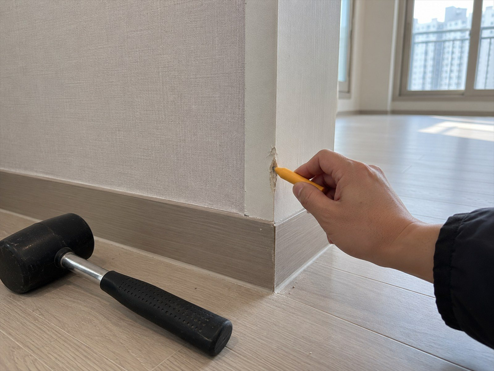
네이버 블로그
아파트 사전점검 업체 온하임에 맡겨 본 솔직한 이야기
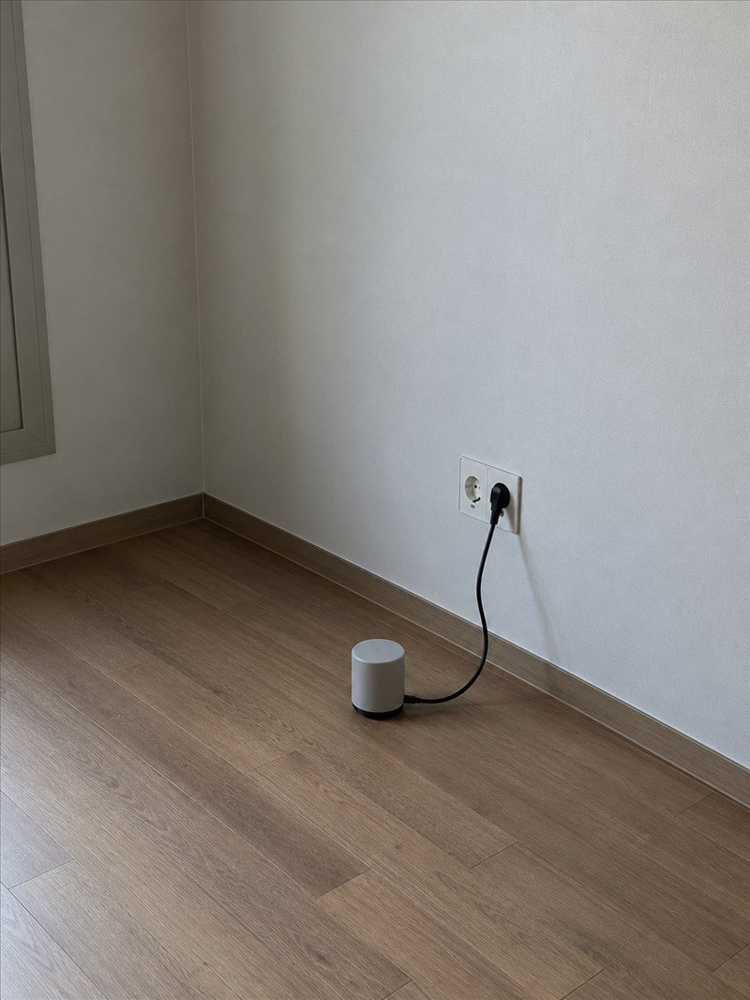
네이버 블로그
[직접 결제] 사전점검 업체 '온하임' 이용기
네이버 블로그
첫 집 마련 기록 4 - 신축 아파트 사전점검을 온하임에 맡긴 날
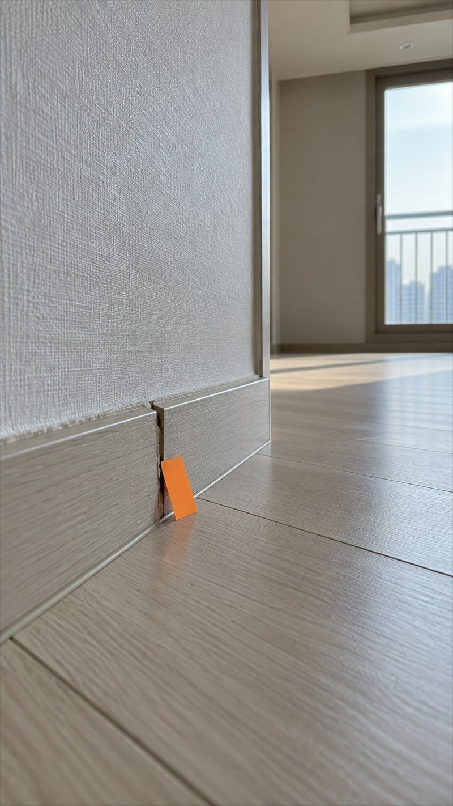
네이버 블로그
셀프 점검 대신 업체를 고른 신도시 새 아파트 사전점검 솔직 후기
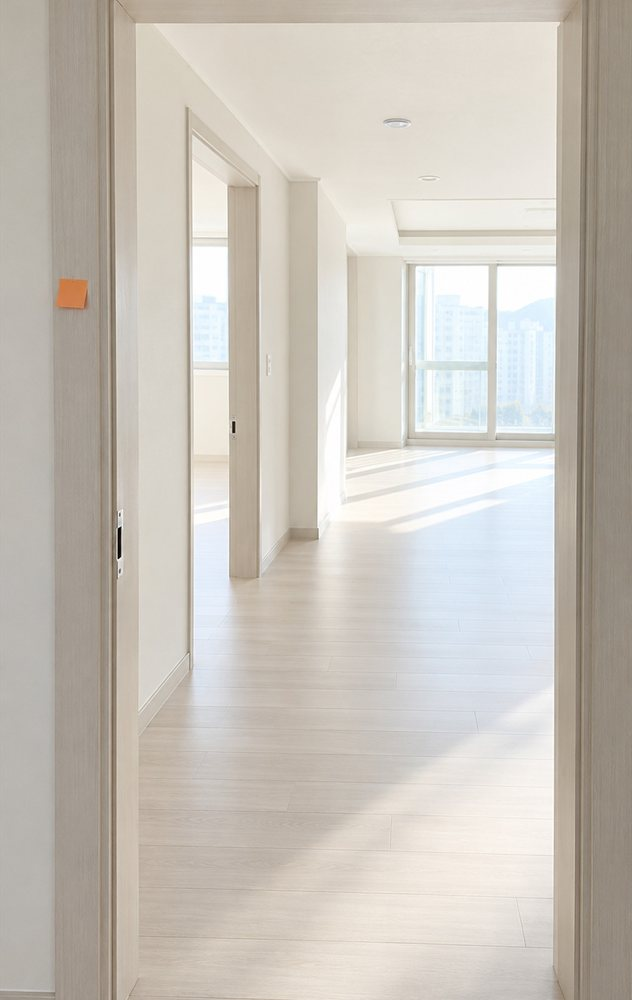
네이버 블로그
신도시 새 아파트 입주 준비 2 - 사전점검 업체 온하임 이용 후기
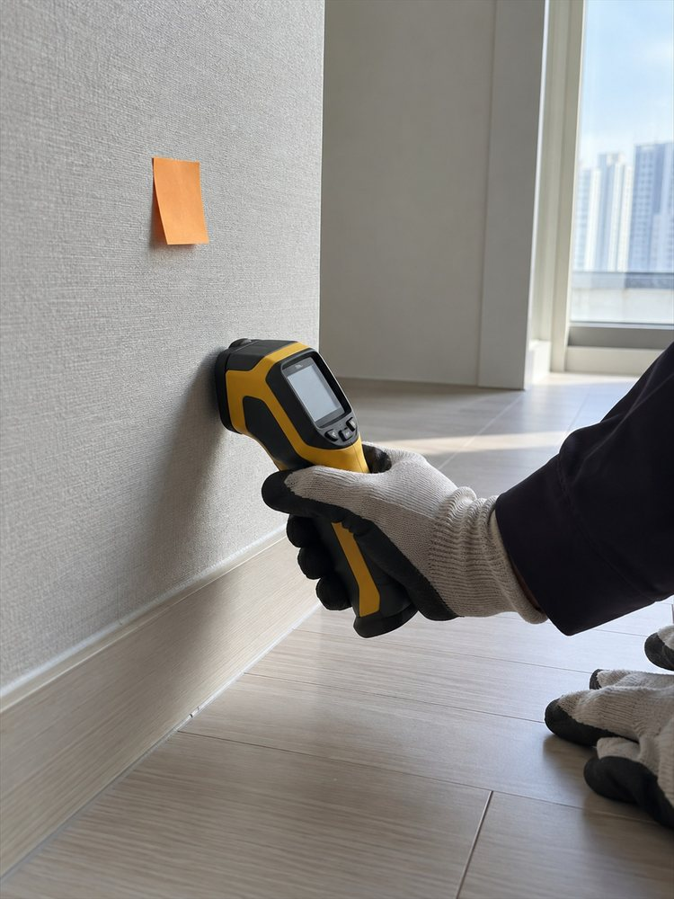
네이버 블로그
아파트 사전점검 ⭕직접 결제⭕ ❌광고 아님❌
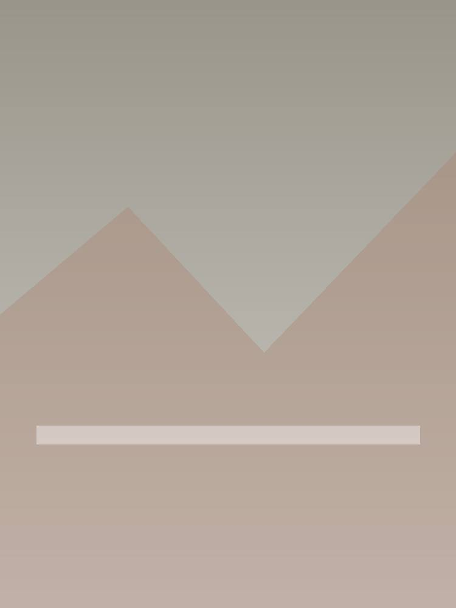
네이버 블로그
사전점검, 하루만 보면 위험한 까닭
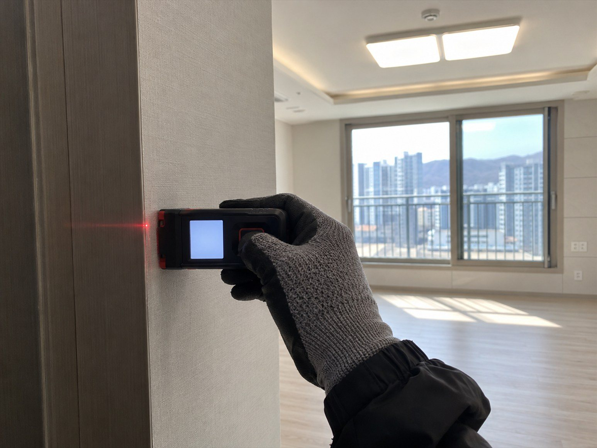
아파트 사전점검 서비스 안내
입주 예정자들의 생생한 리뷰 더보기
셀프 점검 대신 업체를 고른 까닭
처음엔 둘이서 하자를 찾아보려고 했어요. 그런데 후기를 읽어 보니 눈으로만은 알기 어려운 부분이 생각보다 많더라고요. 주변에서도 업체를 쓰라는 사람과 셀프로 충분하다는 사람이 딱 반반이었는데, 첫 집이라 어디까지 봐야 하는지부터 막막해서 온하임에 맡겼습니다. 알아볼수록 벽·바닥 수평이나 단열처럼 맨눈으로는 못 찾는 하자가 많았고, 정해진 시간 안에 집 전체를 둘러봐야 하니 빠뜨리는 곳을 줄이고 싶었어요.
3인 1조로 약 2시간
당일에는 세 분이 오셔서 구역을 나눠 점검하셨고, 다 합쳐 두 시간 남짓 걸렸어요. 여럿이 동시에 나눠 보는 방식이라 생각보다 훨씬 짜임새가 있었고, 방마다 옮겨 다니며 마감과 수평, 눈으로 보기 힘든 곳까지 확인해 주셨습니다. 열화상 카메라로 집 안을 훑는 장면이 특히 기억에 남아요. 저희끼리 했다면 찍힘이나 얼룩만 찾다 끝났을 텐데, 보는 범위부터 다르다는 걸 느꼈습니다.
하자 표시와 앱 등록, 마무리 설명까지
찾은 하자는 말로만 알려 주지 않고 그 자리에 직접 표시한 뒤 앱에도 하나씩 올려 주셨어요. 기록이 남으니 나중에 보수가 됐는지 확인하기도 수월할 것 같아요. 점검이 끝나고는 같이 앉아 찾은 내용을 다시 짚어 주셨고, 저희가 따로 둘러보다 발견한 하자도 빠짐없이 추가로 올려 주셨습니다. 담당자분이 이 정도면 하자가 적은 편이고 집도 잘 지어졌다고 하셔서 그제야 마음이 놓였어요.
사후점검까지 맡긴 까닭
사전점검에서 하자를 많이 찾아도 입주 전에 제대로 고쳐졌는지는 다시 봐야 하잖아요. 첫 집이라 걱정이 커서, 보수 상태를 전문가가 한 번 더 확인해 주는 서비스도 같이 신청했어요.
비용
전용 84㎡ 기준으로 30만 원대 초반이었고, 사전점검·사전 접수 대행·사후점검·사후 접수 대행이 모두 들어간 묶음이었어요. 면적과 고르는 서비스에 따라 금액이 달라지니 예약 전에 견적부터 받아 보시길 권해요. 처음엔 비용이 조금 부담됐지만 세 분이 두 시간 동안 집 전체를 보고, 장비 측정부터 하자 등록과 설명까지 한 번에 끝내 준 걸 생각하면 아깝지 않았어요. 다시 고르라고 해도 온하임에 맡길 것 같습니다.
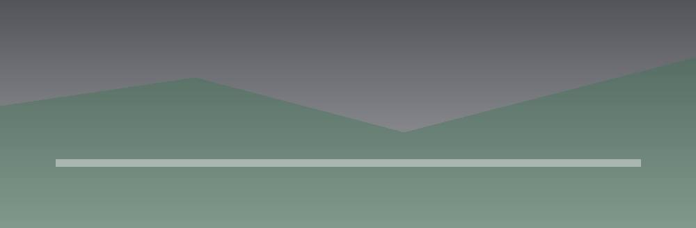
전국 어디서든 찾아볼 수 있는 온하임이 점검을 마친 안전 시설물
아파트 점검만 하나요?
온하임에서만 만날 수 있는 서비스
주택점검
안전진단
하나
아파트 사전점검
한 집에 하자가 평균 80개 넘게?! 사전점검은 혼자 하기보다 건축 전문가와 함께하세요
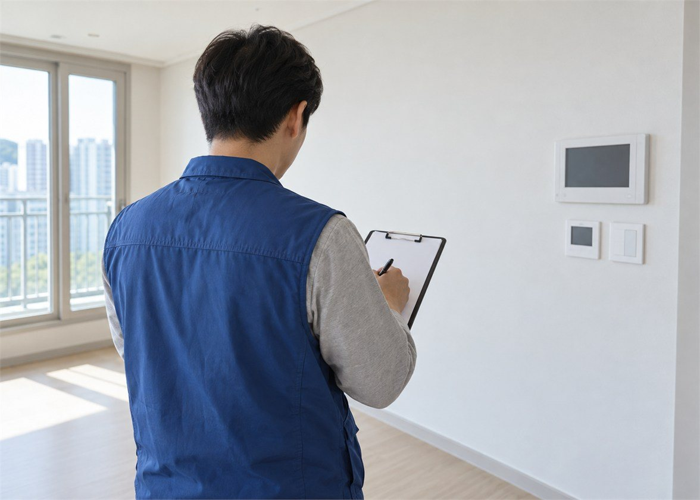
둘
내집관리 서비스
세입자를 지키는 안전장치! 집 점검에서 중개까지 한 번에 맡기세요
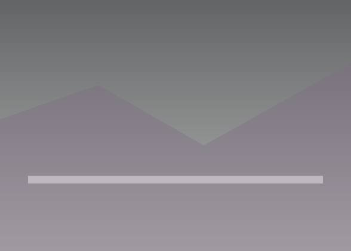
셋
아파트매매 점검
잠깐! 계약 전이라면? 매매 하시려는 아파트 집 상태부터 꼭 확인하세요
넷
인테리어 점검
내가 원했던 집 그대로! 잔금 치르기에 앞서 인테리어 시공 상태를 확인받으세요
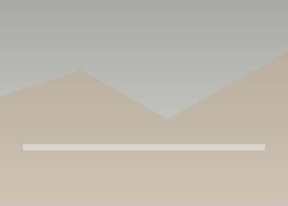
하나
시설물 안전점검
현장 조사와 여러 시험으로 물리적·기능적 결함과 숨은 위험 요인을 찾아 보수 방안 제안
둘
내진성능평가
설계도서와 진단 결과를 검토해 건물이 버틸 힘을 계산한 뒤 내진 보강 공법과 배치 계획까지 자문
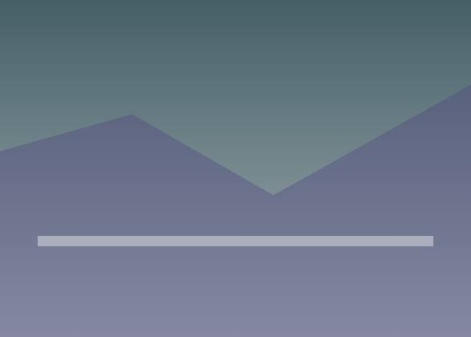
셋
구조 안전진단
증축·용도변경 같은 공사 전에 구조가 안전한지 미리 확인하는 진단 및 보강 방안 제시
넷
공사 현장 정기 안전점검
안전 관리 계획서 검토, 공사 중 정기 안전점검과 준공 전 첫 점검까지
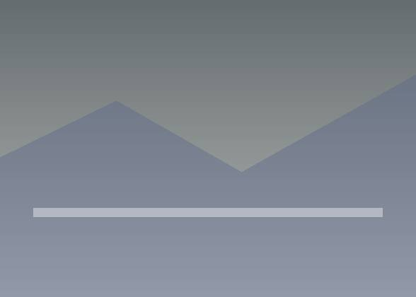
다섯
인접건축물 현황조사
신축 공사의 굴착 깊이를 따져 현장 둘레 건물 가운데 대상을 골라 공사 전 상태를 조사
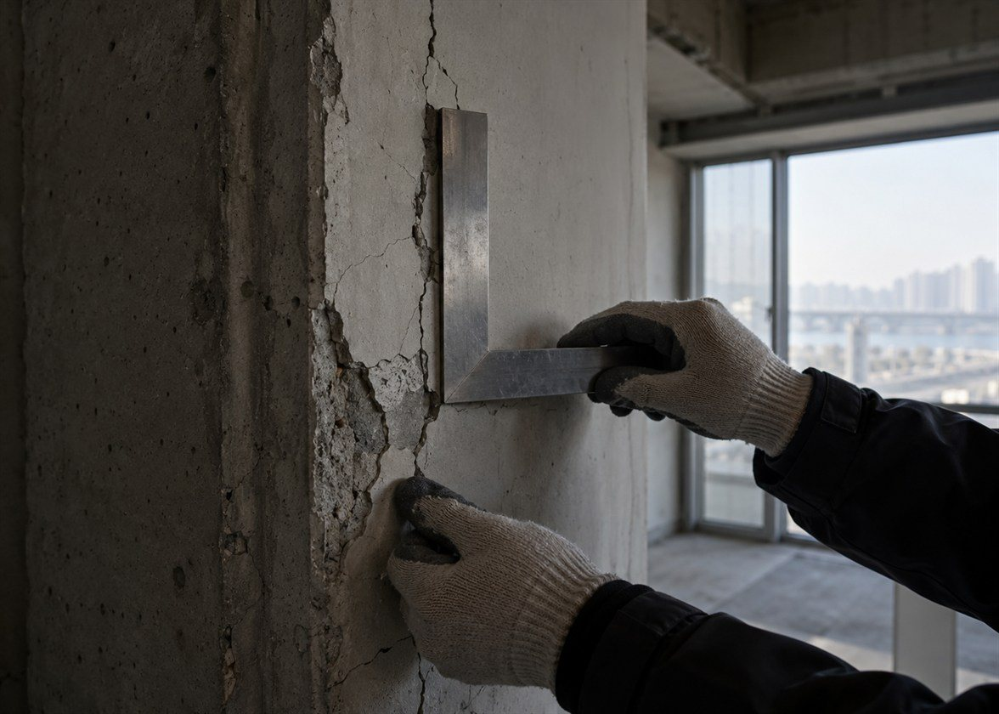
아파트 사전점검, 입주 예정자라면 챙겨야 할 권리
아파트 사전점검의 법적 이름은 '입주예정자 사전방문'입니다. 수억 원을 치르고 넘겨받을 집을 입주 전에 직접 둘러보며 보기 흉한 곳, 제 기능을 못 하는 곳, 안전에 문제가 있는 곳을 찾아 시공사에 보수를 요청하는 절차입니다. 예전에는 새집을 미리 구경하고 잔금을 준비하는 형식적인 날에 가까웠지만, 요즘은 부실시공을 걸러 내고 재산을 지키는 단계로 자리를 잡았습니다.
신축 아파트 사전방문은 법이 정한 의무
주택법 제48조의2와 같은 법 시행규칙은 30세대 이상 공동주택을 짓는 사업주체가 입주지정기간 시작 45일 전까지 2일 이상 입주예정자 사전방문을 열도록 정하고 있습니다. 예전엔 시공사 사정에 따라 들쭉날쭉하던 사전점검을 제도 안으로 들여와, 집을 사는 사람의 권리를 지키려는 취지입니다.
사전점검으로 신축 아파트 하자를 찾아내는 과정
사전점검 일정과 챙길 물건
사전점검은 보통 입주 한두 달 전, 주말을 낀 사흘 동안 열립니다. 입주 예정자는 신분증과 초청장이 있어야 단지 안으로 들어갈 수 있습니다. 혼자 점검한다면 수평계, 줄자, 포스트잇, 필기구, 장갑을 챙겨 가야 막힘없이 둘러볼 수 있습니다. 온하임 같은 사전점검 업체에 맡기면 필요한 도구와 디지털 장비를 갖춘 전문가가 현장에 와서 점검을 대신 진행합니다.
사전점검 후 보수 요청
2020년 1월 개정돼 2021년 1월부터 시행된 주택법은 사전방문에서 나온 하자를 중대한 하자와 그 밖의 하자로 나눕니다. 철근콘크리트 균열, 누수, 누전, 설비 작동 불량 같은 중대한 하자는 사용검사 전에 반드시 고쳐야 합니다. 그 밖의 하자는 세대 안쪽이면 입주예정자에게 집을 넘기기 전까지, 공용부분이면 사용검사 전까지 보수해야 합니다. 사업주체가 보수하지 않으면 500만 원 이하의 과태료를 물게 됩니다.
셀프 사전점검과 전문 업체 대행, 무엇이 다를까
신축 아파트 입주 예정자라면 살면서 드러날 하자를 미리 잡기 위해 사전점검을 꼭 챙겨야 합니다. 직접 할 수도 있고 사전점검 업체에 맡길 수도 있습니다. 요즘은 유튜브와 블로그에 점검 요령이 많이 올라와 있어 그걸 보고 직접 나서는 분도 적지 않습니다.
셀프 점검은 따로 드는 돈이 없어 부담이 적습니다. 다만 맨눈으로 찾을 수 있는 건 벽지 얼룩이나 마루 찍힘처럼 겉으로 드러난 하자 정도입니다.
대행 업체를 쓰면 평당 1만 원 안팎의 비용이 듭니다. 원하는 시간에 점검받으려면 선착순 예약을 일찍 해 두는 편이 좋습니다. 업체에 맡기면 맨눈으로는 알 수 없는 단열재 누락, 바닥 난방 배관 막힘, 수평 불량 같은 하자를 전용 장비로 재서 숫자로 확인할 수 있습니다. 아래에서 두 방식이 실제로 어떻게 다른지, 들인 돈만큼 효과가 있는지 차례로 비교해 보겠습니다.
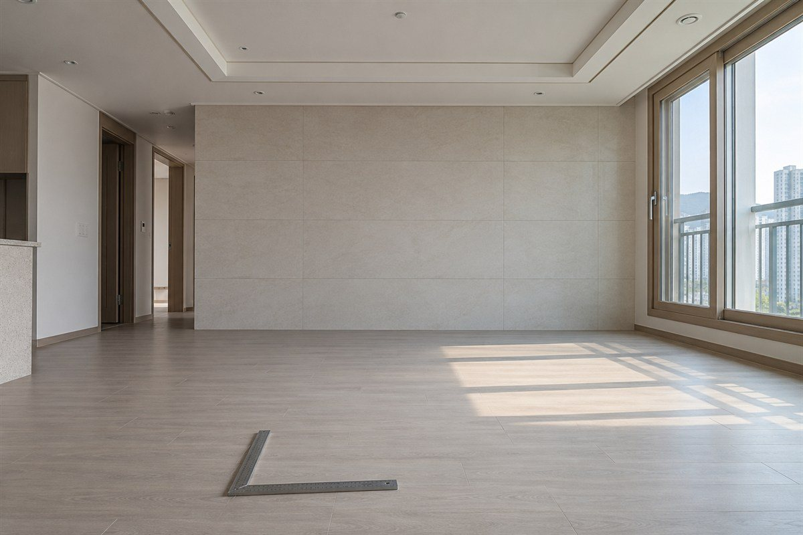
혼자 하는 점검과 업체 대행 점검 비교
혼자 하는 점검, 좋은 점과 한계
셀프 점검의 가장 큰 장점은 내 집을 내 눈으로 자세히 볼 수 있다는 점입니다. 시간을 넉넉히 들여 마감 상태, 벽지와 바닥의 흠, 수납장 속, 창호 둘레 같은 곳을 하나씩 확인할 수 있습니다. 둘러보는 동안 집 구조와 상태를 자연스럽게 익히게 되고, 앞으로 살 집에 정도 붙습니다.
비용이 들지 않는다는 점도 큽니다. 업체에 맡기면 점검비가 따로 나가지만, 직접 하면 그 돈을 아껴 이사비나 가전·가구 장만, 입주 청소 같은 데 보탤 수 있습니다. 입주 전후로 돈 나갈 곳이 많은 시기라 이 차이가 작지 않습니다.
일정을 내 마음대로 정할 수 있다는 것도 장점입니다. 업체를 쓰면 원하는 날짜와 시간이 이미 차 있을 수 있고, 비는 시간에 맞추려면 내 일정을 바꿔야 하는 일도 생깁니다. 셀프 점검은 편한 때에 가서 여유 있게 볼 수 있고, 입주 예정자이니 여러 번 다시 가서 확인할 수도 있습니다.
셀프 점검에서 실제로 부딪히는 어려움
전문 지식이 없으면: 도배지가 살짝 뜬 겉모습 하자와 벽 속에 맺힌 결로 같은 기능 하자를 가려내기 어렵습니다. 장비가 없으면: 눈에만 기대야 하니 수평 불량, 단열재 누락, 바닥 난방 배관 막힘, 누수 같은 하자는 찾아낼 방법이 없습니다. 현장의 부담: 시공사 직원이 "이 정도는 허용 오차입니다"라고 하면, 내세울 수치가 없는 입주민은 반박하지 못하고 그대로 넘어가는 일이 많습니다. 하자 접수의 번거로움: 하자마다 사진을 찍고 내용을 적어야 시공사에 보수를 요청할 수 있습니다. 입주민이 직접 하면 적어도 3시간, 많으면 5시간이 걸립니다.
사전점검 대행 업체를 찾는 이유와 전문성
대행 서비스를 쓰면 평당 1만 원 안팎의 비용이 듭니다. 전용면적이 넓을수록 금액도 커집니다. 입주를 앞두고 이사비와 가전·가구 구입비가 한꺼번에 나가는 때라 부담으로 느껴질 수 있습니다. 이름난 업체는 입주지정기간 전에 예약이 금방 차서 날짜를 맞추기 어려울 때도 있습니다.
그런데도 많은 입주 예정자가 대행 업체를 찾는 건, 일반인이 찾기 어려운 하자를 전문가가 확인하고 기록해 주기 때문입니다. 겉보기엔 멀쩡해도 빠진 시공이나 잘못된 시공이 숨어 있을 수 있습니다. 단열재 누락, 바닥 난방 배관 막힘, 미세한 수평·수직 불량은 경험과 장비 없이는 찾기 힘든 하자입니다. 대행 업체 전문가는 정밀 장비로 이런 부분까지 살피고, 결과를 객관적인 수치로 정리해 시공사에 보수를 요청할 수 있는 보고서로 드립니다.
정밀 장비로 살피는 주요 하자
온하임은 열화상 카메라, 레이저 레벨기, 공기질 측정기 같은 디지털 장비를 씁니다. 눈으로 볼 수 없는 곳까지 비파괴 장비로 점검해 객관적인 데이터를 남겨 드립니다.
잰 값을 근거로 쓴 믿을 만한 점검 리포트를 드립니다.
점검 후 받는 리포트는 시공사에 보수를 요청할 때 가장 든든한 근거가 됩니다. "거실 바닥이 좀 기운 것 같아요"라는 말보다 "거실 가운데를 기준으로 오른쪽 수평 오차 8mm, 기준치 넘음"이라는 수치가 시공사의 빠른 보수 계획을 끌어냅니다.
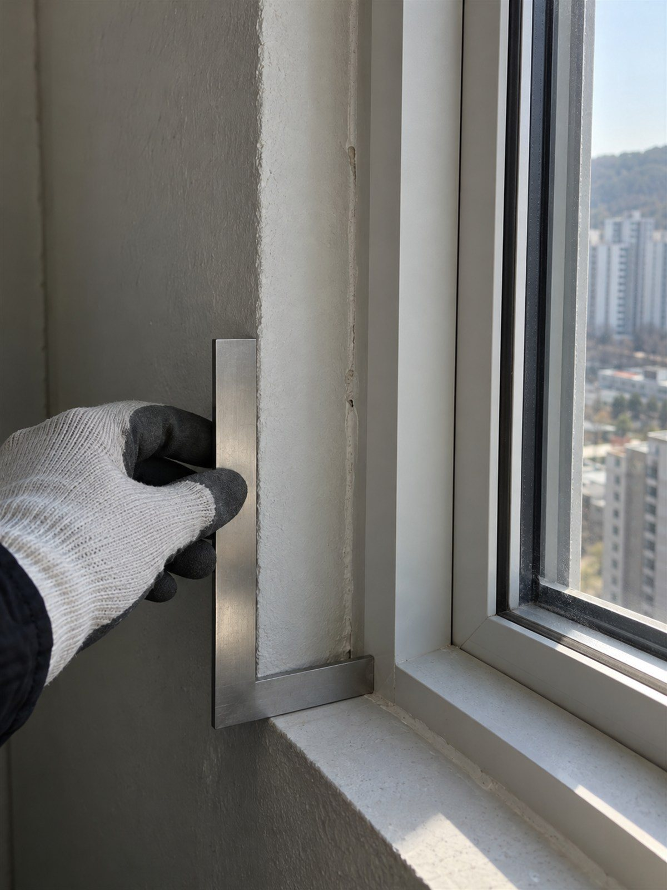
신축 아파트 사전점검 때 꼭 볼 공간별 체크리스트
사전점검 때 공간마다 자주 나오는 하자
신축 아파트 사전점검은 눈에 띄는 흠집만이 아니라, 살면서 불편을 주거나 기능에 문제가 될 하자를 찾는 과정입니다. 현관, 거실, 주방, 침실, 욕실, 발코니는 쓰임새와 시공 방식이 달라 나오는 하자도 다릅니다. 입주 후 가전과 가구를 들이고 공사를 하면 시공 때 생긴 문제인지 가려내기 어려워지고, 시공 하자임을 증명하지 못해 보수 요청이 거절될 수도 있습니다. 그래서 공간마다 꼭 봐야 할 하자를 미리 알아 두어야 합니다.
온하임은 사전점검을 하며 공간별로 자주 나오고 반드시 확인해야 할 하자 데이터를 쌓아 왔습니다. 아래는 온하임 국가자격 건축 전문가들이 공간마다 꼭 보는 하자와 점검 포인트를 모은 것입니다. 직접 점검할 때 참고하셔도 되고, 사전점검 뒤 보수가 제대로 됐는지 확인하는 기준으로 쓰셔도 좋습니다.
1. 현관과 거실: 뒤틀린 문틀, 들뜬 바닥재
현관은 자재와 작업자가 모두 드나드는 길이라 입구와 거실에서 마감 불량이 가장 많이 나옵니다.
현관 방화문이 흔들리거나 가스켓이 들뜬 경우
방화문을 닫았는데 문과 문틀 사이가 벌어진다면 문틀이 휘었거나 수평이 틀어진 것입니다. 이 틈으로 복도 소음과 찬 바람이 들어오고, 불이 나면 연기가 집 안으로 바로 스며듭니다. 문틀 둘레 가스켓이 닳았거나 끊겼다면 새것으로 바꿔 달라고 요청하세요.
거실 마루가 뜨고 아트월 타일 속이 빈 경우(중공음)
거실 강마루가 바닥에 제대로 붙지 않았거나 바닥 수평이 틀어지면 밟을 때 삐걱 소리가 납니다. 이대로 두면 몇 년 안에 바닥재가 깨질 수 있습니다. 벽 대리석과 타일은 손가락으로 두드려 '통통' 빈 소리가 나면 접착 불량이라 몇 년 안에 떨어질 수 있으니, 이런 소리가 나면 시공사에 확인을 요청하세요.
2. 주방과 다용도실: 기운 싱크대, 새는 배수관
주방은 가구가 바르게 조립됐는지, 물이 새는 설비는 없는지 집중해서 봐야 합니다.
싱크대 문 높이가 다르고 상판 실리콘이 빠진 경우
싱크대 위아래 장의 문 높이가 서로 다르면 조립 하자입니다. 상판과 벽 타일이 만나는 모서리에 실리콘이 빠져 있으면 물이 가구 안으로 스며 목재가 썩고 곰팡이가 핍니다.
싱크대 밑 배수관 이음매에서 물이 새는 경우
개수대에 물을 가득 받았다가 한꺼번에 빼 보면 아래 배수구로 물이 역류하거나 연결 호스에서 물이 새는 경우가 있습니다. 물을 조금씩 쓸 때는 드러나지 않고 한 번에 많이 내릴 때만 보이는 증상이라 꼭 시험해 봐야 합니다.
3. 욕실과 발코니: 고이는 물, 빠진 줄눈
욕실은 바닥 기울기가 틀려 물이 빠지지 않을 때가 가장 큰 문제입니다.
바닥 물매가 틀려(구배 하자) 욕실에 물이 고이는 경우
바닥 타일에 물을 뿌렸는데 한쪽에 고인다면 바닥 기울기 작업이 잘못된 것입니다. 타일을 걷어 내고 다시 깔아야 하는 큰 하자입니다.
욕실 양변기·세면대·욕조·액세서리가 헐겁거나 깨진 경우
변기나 세면대 밑 둘레 백시멘트가 깨지거나 구멍이 나 있으면 냄새가 올라오는 하자로 이어집니다. 양변기와 세면대가 단단히 고정됐는지도 꼭 확인하세요.
발코니 벽 도장면 갈라짐
발코니 외벽이나 창틀 둘레에 금이 가 있으면 비 올 때 물이 스며 틈이 더 벌어질 수 있으니, 균열은 꼭 보수 목록에 올려야 합니다.
4. 침실과 드레스룸: 단열 불량, 잘못 단 가구
방은 바람이 잘 통하지 않아 단열이 제대로 됐는지, 붙박이장이 바르게 달렸는지를 봅니다.
바깥과 맞닿은 천장·벽이 젖는 경우(결로와 누수)
바깥과 닿은 방 천장 모서리 벽지가 젖었거나 색이 변했다면 외벽 균열로 물이 새거나 외벽 쪽 단열 시공이 잘못됐을 가능성이 큽니다. 겨울철 사전점검이라면 열화상 카메라로 외벽 단열재와 우레탄 폼 충진이 덜 된 구간을 찾아야 합니다.
붙박이장 문이 덜 닫히고 선반이 흔들리는 경우
붙박이장 문이 끝까지 닫히지 않을 때, 서랍을 당기면 레일에서 빠져 버릴 때, 옷봉이 수평이 안 맞아 한쪽으로 쏠릴 때, 선반이 한쪽으로 기울 때는 모두 가구를 잘못 단 시공 하자입니다.
5. 창호와 샷시: 시공 불량, 유리 긁힘, 고장 난 잠금장치
창호와 샷시는 실내 온도를 지키는 중요한 공정이라 창틀 시공 상태와 유리 상태를 잘 봐야 합니다.
유리창이 깊게 긁히거나 깨진 경우
유리 표면에 눈에 띄는 긁힘이나 모서리 깨짐이 있으면 나중에 더 크게 파손될 수 있습니다.
샷시가 뻑뻑하거나 수직이 틀어진 경우
창을 여닫을 때 뻑뻑하거나 소리가 난다면 아래 롤러 수평이 틀어졌거나 이물질이 낀 경우입니다.
창틀 물구멍이 잘못 뚫리거나 기울기가 틀리고, 손잡이가 잠기지 않는 경우
창틀 아래 레일에 빗물 빠지는 구멍이 없거나 엉뚱한 쪽에 뚫려 있으면 레일에 고인 물이 밖으로 나가지 못합니다. 게다가 레일 기울기가 바깥이 아니라 실내 쪽으로 잡혀 있으면 빗물이 집 안으로 들어옵니다.
샷시 잠금장치 불량
창을 닫아도 잠금장치가 잘못 달려 있으면 쉽게 열릴 수 있습니다.
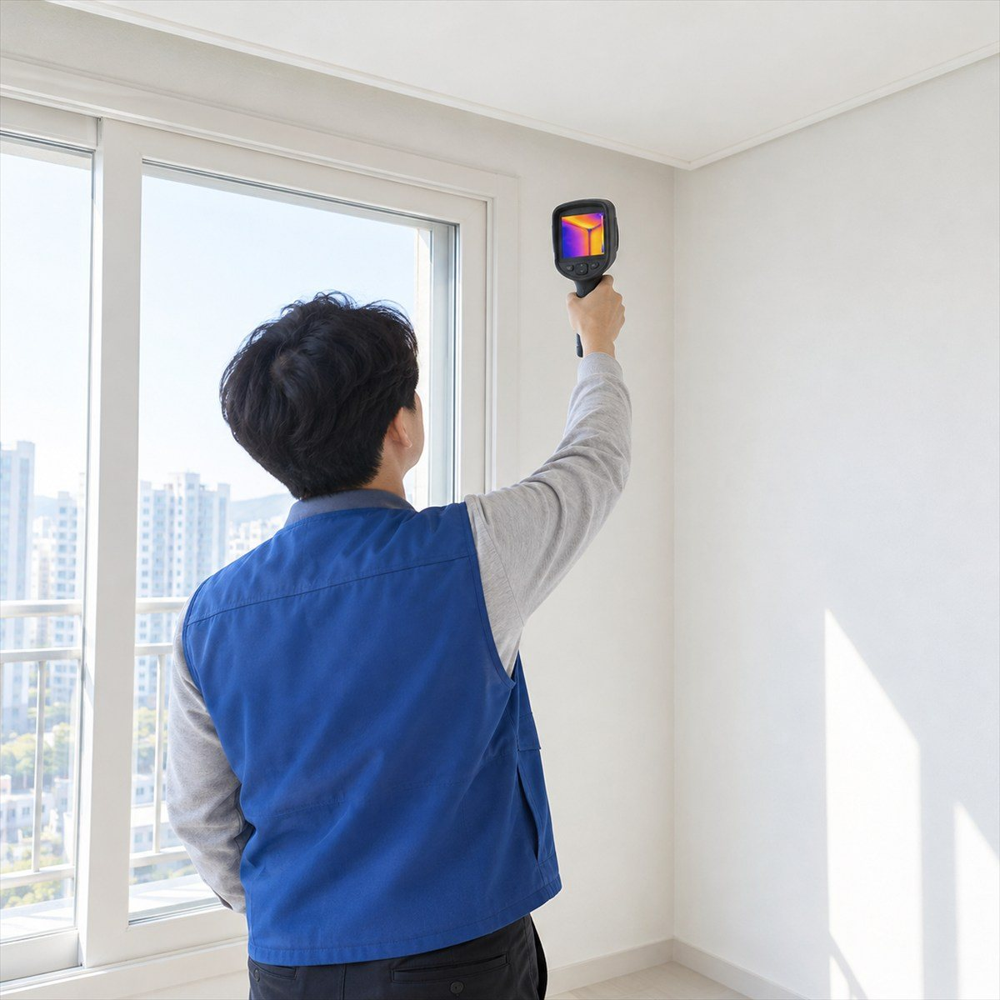
국가자격 전문가가 점검하는 사전점검 전문기관 온하임
국가자격 건축 전문가와 디지털 장비로 짠 점검 체계
아파트 사전점검이 얼마나 정확한지는 현장에 나가는 기술자의 자격과 실력에 달려 있고, 그것이 곧 업체를 믿을 수 있느냐로 이어집니다. 비전문가가 점검하면 눈에 보이는 흠집만 늘어놓다 끝나기 쉽습니다. 살면서 실제로 문제가 될 하자를 정확히 찾으려면 시공 구조와 공정을 아는 전문 인력이 점검해야 합니다.
온하임은 외부 하청에 맡기지 않고 국가자격을 가진 건축 전문가를 모든 세대에 보내 점검의 객관성과 신뢰도를 지킵니다. 사전점검은 하자를 찾는 데서 끝나지 않고, 문제가 생긴 위치와 원인이 시공 단계·자재·마감 중 어디에 있는지 판단하는 일까지 포함합니다. 이 판단이 있어야 시공사가 받아들일 만한 보수 요청을 할 수 있습니다.
1. 모든 현장에 국가자격 건축 전문가 배정
온하임은 모든 점검 현장에 전문 기술자를 보냅니다. 현장에 나가는 전문가는 건설기술인협회에 등록돼 있고, 국가기술자격을 갖췄으며, 10년 넘는 경력을 쌓았습니다.
대형 시공사·감리 경력을 갖춘 숙련 인력
온하임 점검 전문가는 체크리스트를 채우는 데서 그치지 않습니다. 도면과 현장을 맞대어 보며 문제가 마감에서 생긴 것인지 시공 단계에서 비롯된 것인지 가려냅니다. 이 차이는 보수를 요청할 때 그대로 드러나고, 원인을 정확히 짚은 지적은 시공사도 쉽게 반박하지 못합니다.
전문 장비와 건축 지식이 함께할 때
디지털 장비로 잰 값은 전문가가 해석해야 비로소 쓸모 있는 정보가 됩니다. 국가자격 전문가들은 레이저 레벨기와 열화상 카메라로 얻은 데이터를 분석해 시공사에 기술적으로 타당한 하자 근거를 내놓습니다. 입주민이 시공사와 협의할 때 가장 든든한 힘이 되는 부분입니다.
2. 온하임의 체계적인 내부 교육과 품질 관리
온하임은 전문 인력을 기르기 위해 교육 과정을 체계적으로 갖추고, 영남권과 수도권에 전담 교육장을 한 곳씩 두고 있습니다. 교육은 아파트하자점검사 민간자격을 바탕으로 현장에서 바로 쓰는 실무 능력에 맞춰 짰고, 교재와 시각 자료, 장비 실습, 현장 참관을 함께 진행합니다. 교육 과정을 이렇게 다듬은 덕분에 프리랜서 교육 효율을 크게 끌어올렸고, 늘어나는 주택 점검 수요를 감당할 바탕을 마련했습니다.
정기 기술 교육과 최근 하자 경향 공유
신축 아파트의 공법과 마감재는 해마다 달라집니다. 온하임은 이 변화를 놓치지 않도록 최근 하자 사례와 새 측정 장비 다루는 법 등을 전문가 대상 내부 교육으로 꾸준히 이어 가고 있습니다.
점검 품질 살피기와 표준화된 검수 절차
어느 기술자가 방문해도 같은 수준으로 점검할 수 있도록, 온하임은 쌓인 데이터를 바탕으로 점검 결과를 살피고 기준을 하나로 맞춥니다. 모든 전문가는 온하임 품질 관리 지침에 따라 점검합니다.
사전점검 업체가 들고 오는 디지털 장비
사전점검에서 전문 장비는 거들어 주는 도구가 아니라 하자를 증명하는 핵심 수단입니다.
단열, 난방 배관, 수평·수직, 공기질은 둘러볼 때는 멀쩡해 보여도 막상 살기 시작하면 결로, 난방 불량, 기우는 가구, 새집증후군 같은 모습으로 드러납니다. 앞에서 말했듯 입주 전에 잡아 두지 못하면 그 하자가 시공 탓인지 생활 습관 탓인지 가릴 수 없어 보수 협의가 어려워집니다. 장비로 점검하면 하자가 있는지뿐 아니라 어디에서 어디까지 생겼는지도 알 수 있고, 수치를 보면 무엇을 고쳐야 해결되는지가 분명해집니다. 시공사에 보수를 요청할 때 이런 데이터가 있어야 반려되지 않고 바로 보수로 이어질 가능성이 커집니다.
아래에 사전점검 현장에서 실제로 쓰는 전문 장비와 장비마다 하는 일을 정리했습니다.
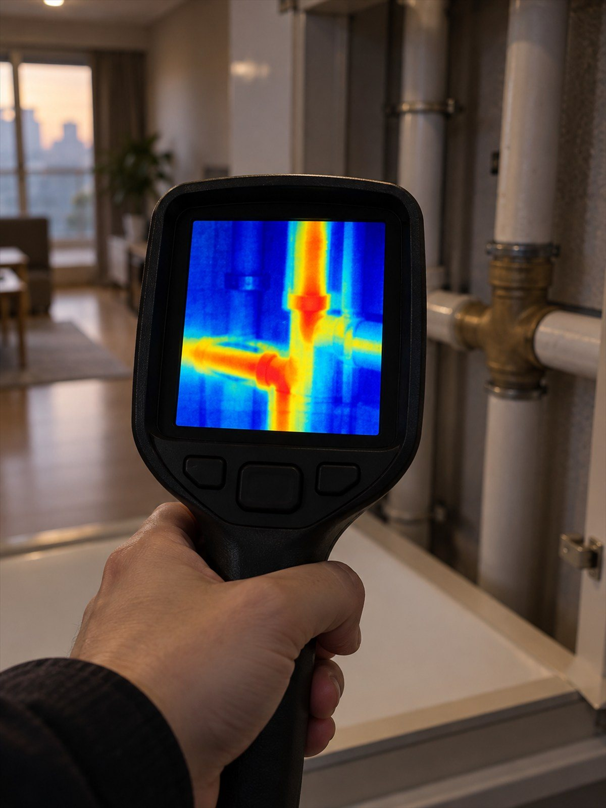
아파트 누수·단열 하자를 찾을 때 챙기는 점검 장비
1. 열화상 카메라로 단열과 난방 배관 상태를 진단합니다
적외선으로 열을 읽어 벽 속 온도 차이를 눈에 보이게 만들고, 열이 새어 나가는 구간을 짚어 냅니다.
외벽 이음부의 단열재 빠짐과 열교 현상 확인
안과 밖의 온도 차가 나는 지점을 찍어 봅니다. 찍힌 화면에서 단열재가 끊긴 곳이나 단열재 사이 폼 충진이 모자란 곳을 찾습니다. 어느 한 지점만 주변보다 온도가 낮다면 그곳이 결로와 곰팡이의 직접적인 원인이 될 수 있습니다. 이 화면을 근거로 시공사에 보수를 요청하시면 됩니다.
보일러를 켜서 바닥 배관 흐름과 새는 곳 확인
보일러를 돌린 뒤 바닥에 열이 퍼지는 모양을 봅니다. 열이 퍼지는 모습으로 배관이 설계 간격대로 깔렸는지, 어느 구간이 막혔는지, 새는 곳은 없는지를 확인합니다.
2. 수평·수직을 정밀하게 재는 레이저 레벨기
벽과 바닥에 레이저 선을 쏘아 건물의 뒤틀림, 벽체와 샷시틀·문틀의 수직·수평 상태를 확인합니다. 장비를 쓰면 시공 오차를 mm 단위까지 잴 수 있습니다.
거실 아트월 타일과 가구가 똑바로 섰는지 측정
거실 벽의 대형 타일과 주방 가구가 수직으로 바르게 붙었는지 봅니다. 수직이 틀어지면 가구 문이 비틀리거나 마감 실리콘이 벌어집니다.
바닥이 평평한지, 문틀 수평이 맞는지 확인
거실과 방 바닥 높이가 고른지 확인합니다. 수평이 맞지 않으면 가구를 놓았을 때 흔들릴 수 있습니다. 방문틀과 목문틀의 수직도 함께 봅니다. 수직이 어긋나면 문이 끝까지 닫히지 않거나 문짝이 문틀에 쓸리는 소리가 납니다.
3. 공기 속 유해 물질을 재는 장비
들어가 살 사람의 건강을 위해 눈에 보이지 않는 공기 속 유해 성분을 살핍니다.
라돈(Radon) 농도를 재고 권고 기준과 견주기
건축 자재에서 나오는 라돈을 정밀 측정기로 잽니다. 측정값이 환경부 권고 기준인 148Bq/㎥ 안에 드는지 확인합니다.
새집증후군 원인 물질(포름알데히드·VOC) 측정
가구 접착제와 마감재에서 나오는 유해 물질 농도를 잽니다. 흔히 새집증후군이라고 부르는 증상의 원인이라, 측정 결과를 보고 입주 전 베이크아웃 같은 대처 방법을 안내해 드립니다.
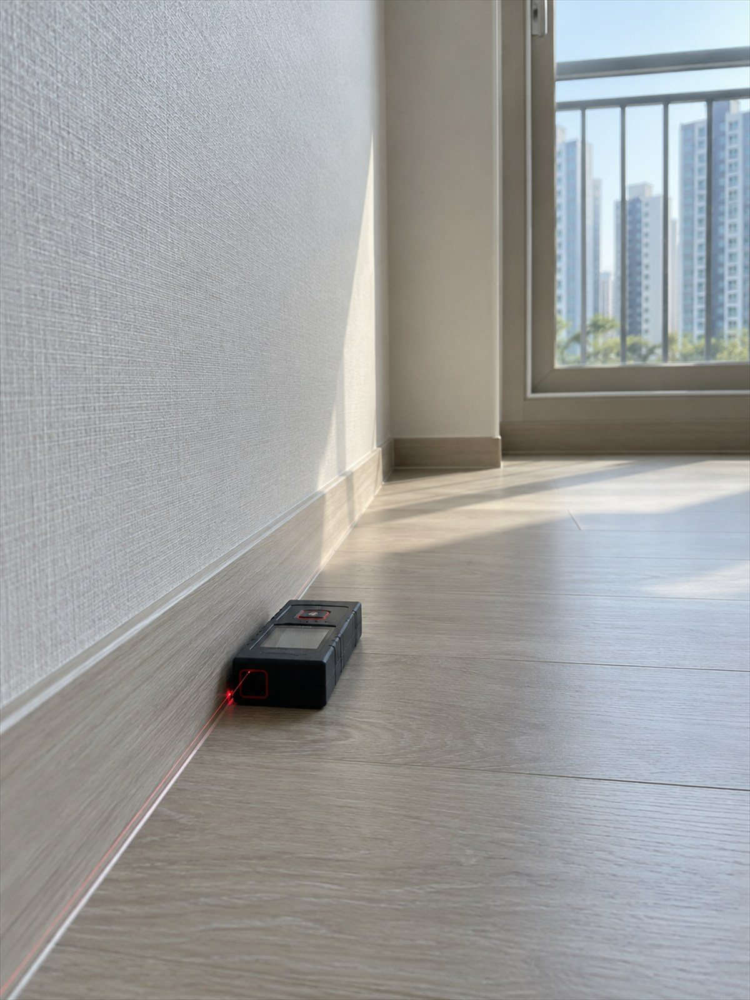
LH 시방서를 바탕으로 정리한 사전점검 체크리스트
눈으로 살피는 사전점검 체크리스트
눈으로 보는 점검은 LH 시방서와 자체 체크리스트 470여 항목, 국토교통부 고시 「공동주택 하자의 조사, 보수비용 산정 및 하자판정기준」을 따라 미관상·기능상·안전상 하자로 나눠 확인합니다.
-미관상 하자로는 벽지 얼룩, 가구 문짝 수직·수평 어긋남, 흠집, 찍힘, 긁힘 등을 주로 찾습니다. -기능상 하자는 시공한 부분이 제 역할을 못 하는 경우를 말합니다. 예를 들어 바닥 타일을 깔았지만 바닥에 단단히 붙지 않아 속이 비어 버린 경우가 있습니다. -안전상 하자로는 난간이 시방서 기준보다 낮게 설치됐거나, 벽 타일이 떠 있어 시간이 지나면 떨어질 수 있는 경우 등이 있습니다. 사전점검에서 눈으로 보는 점검이 차지하는 몫은 매우 큽니다.
1. 벽과 바닥 마감이 얼마나 잘 됐는지 확인
집을 둘러볼 때 보기 싫은 곳은 없는지, 눈에 띄는 하자가 생활에 불편을 주지는 않는지 살핍니다.
도배지 들뜸·훼손·얼룩을 집 전체에서 확인
벽지 이음매가 벌어지지 않았는지 봅니다. 천장 몰딩이나 샷시 둘레처럼 다른 공정과 맞닿는 곳에서 하자가 자주 나옵니다. 공사 중에 생긴 찢어짐, 칼자국, 얼룩도 찾아 포스트잇으로 자리를 표시하고 사진으로 남깁니다.
바닥 마루 찍힘, 이음 틈, 걸레받이 마감 점검
마루 표면에 찍히거나 긁힌 곳이 없는지 봅니다. 마루 판 사이가 0.5mm 넘게 벌어진 곳도 찾습니다. 벽과 바닥이 만나는 걸레받이에 실리콘이 빠지거나 터진 곳까지 확인합니다.
2. 창호와 가구 철물이 잘 움직이는지 점검
창문과 수납 가구가 제대로 움직이는지 여러 번 반복해 작동해 봅니다.
샷시와 방충망 여닫힘 점검
샷시와 잠금장치가 제대로 움직이는지 봅니다. 샷시를 몇 번이고 여닫으며 레일에서 나는 소리나 걸리는 느낌을 확인합니다. 손잡이를 돌려 잠갔을 때 창틀이 꼭 붙는지, 방충망에 구멍이 났거나 틀이 휘지는 않았는지도 살핍니다.
샷시가 벽에 단단히 붙었는지 점검
샷시가 둘레 벽체와 잘 물려 있어 닫을 때 벽이 흔들리지 않는지 봅니다. 벽이 흔들린다면 나중에 열이 새는 원인이 될 수도 있습니다.
싱크대·붙박이장 문과 서랍이 잘 움직이는지
싱크대와 붙박이장 문을 모두 열어 문 사이 간격이 고른지 보고, 서랍을 끝까지 당겨 제대로 움직이는지 점검합니다. 안쪽 마감이 거칠어 물건이 상할 염려는 없는지 손으로 직접 만져 확인합니다.
하자를 기록하고 종합 보고서로 정리해 드립니다
사전점검은 하자를 찾았다고 끝나지 않습니다. 정말 중요한 건 그다음입니다. 찾은 하자를 어떻게 정리하고 어떤 형태로 남기느냐에 따라 보수 과정이 쉬워지기도, 어려워지기도 합니다. 현장에서는 하자가 수십 개, 많으면 수백 개씩 한꺼번에 나오기도 합니다. 이걸 입주자가 직접 접수하다 보면 빠뜨리거나 두 번 올리는 항목이 생기기 쉽습니다. 온하임은 이 과정을 대신 정리해 입주자의 짐을 덜어 드리는 데 힘을 쏟고, 시공사와 다툼이 생기지 않도록 온하임 점검 보고서까지 드립니다.
한눈에 알아보는 하자 이름과 정리된 보수 요청 문구
'여기가 좀 이상해요' 같은 말 대신 시공사가 곧바로 알아듣는 통일된 하자 이름을 씁니다. 입주자는 온하임 보고서의 하자 내용을 그대로 복사해 붙여 넣기만 하면 됩니다. 시공사와 이리저리 주고받는 수고를 덜고 정확하게 보수를 요청할 수 있습니다.
하자 위치를 바로 찾게 하는 여러 각도의 사진
시공사 하자 접수 앱에 올리는 사진은 보수 담당자가 그 자리를 한 번에 찾아갈 수 있을 만큼 분명해야 합니다.
접수용 가까운 사진과 위치 확인용 먼 사진을 함께
하자 부위만 크게 찍으면 어디인지 알 수 없고, 너무 멀리서 찍으면 무엇이 문제인지 보이지 않습니다. 보고서에는 하자 상태를 자세히 보여 주는 가까운 사진과 전체 위치를 알려 주는 먼 사진을 나란히 붙입니다. 그러면 시공사는 따로 묻지 않고 곧바로 보수에 들어갈 수 있습니다.
하자마다 판례와 하자심사·분쟁조정 사례를 연결
온하임 사전점검 리포트에는 하자마다 비슷한 하자 분쟁 판례와 국토교통부 하자심사·분쟁조정 사례가 함께 붙어 있습니다. 시공사가 보수를 미루거나 "하자가 아닙니다"라고 할 때 이 사례를 근거로 다시 협의를 요청할 수 있습니다. 하자 종류와 상황에 따라 붙는 판례·조정 사례는 달라질 수 있고, 사전점검 서비스를 이용하신 분께만 드립니다.
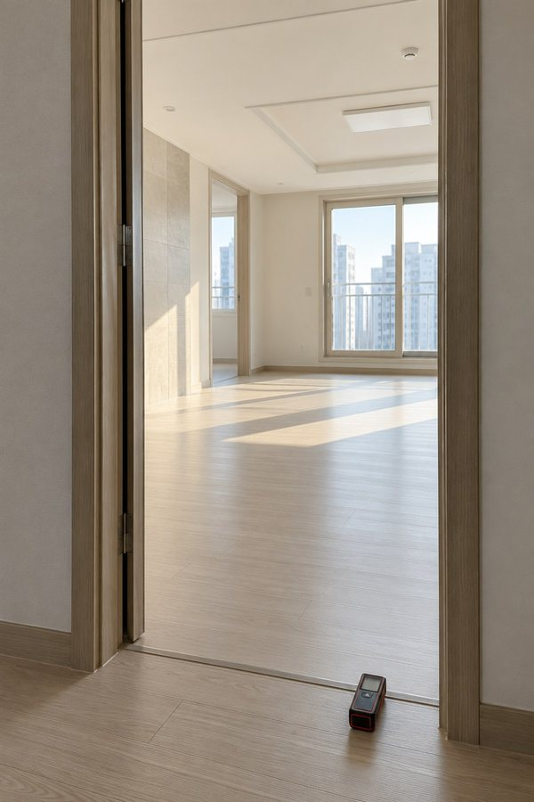
사전점검 뒤 하자보수를 챙기기 위한 하자점검 보고서
하자 보수가 끝났는지 확인하는 방법과 체크리스트
사전점검에서 찾은 하자가 시공사 보수로 실제 해결됐는지는 따로 확인해야 합니다. 접수했으니 고쳐졌겠거니 싶지만, 자재 수급 문제나 작업자 숙련도에 따라 보수가 덜 됐을 수 있습니다. 고치는 과정에서 새 하자가 생기거나 맞지 않는 방법으로 고쳐 다시 보수해야 하는 경우도 있습니다. 그래서 입주 전에 시공사가 보수를 마쳤다고 하면 사전점검 보고서와 하나씩 맞춰 보며 다시 확인해야 합니다.
입주해서 가구와 가전을 들인 뒤에 보수하면 공사 먼지와 소음 때문에 생활이 불편해집니다. 시공사와 날짜도 다시 맞춰야 하니, 집이 비어 있을 때 사후점검을 해 두는 게 좋습니다.
사후점검에서 고쳐지지 않았거나 잘못 고친 곳이 나오면 시공사에 다시 보수를 요청하고, 언제까지 마칠지 답을 받아 두어야 합니다. 그래야 하자담보책임기간 안에 다툼을 막고 집의 품질과 안전을 지킬 수 있습니다.
1. 시공사가 보수를 마쳐야 하는 시기와 사후점검 방법
원칙적으로 시공사는 사전점검에서 접수된 하자를 입주가 시작되기 전에 마무리해야 합니다.
하자담보책임기간은 얼마나 될까
사업주체는 공동주택관리법 시행령 제36조와 별표 4에 따라 일반 마감은 2년, 설비·단열·창호 등은 3년, 철근콘크리트·조적·지붕·방수 공사 등은 5년, 기둥과 내력벽 같은 내력구조부는 10년 동안 법적으로 책임을 집니다. 입주 뒤 새 하자가 생기면 해당 연차에 맞춰 무상 보수를 다시 요청할 수 있습니다.
입주 전에 보수 상태를 다시 점검해 두세요
짐을 들인 뒤에 하자를 고치면 날짜를 따로 맞춰야 하고 먼지와 소음도 견뎌야 해서 꽤 불편합니다. 그래서 입주 전에 사전점검 기록을 놓고 얼마나 고쳐졌는지 하나씩 확인해야 합니다. 가장 확실한 방법은 온하임 전문가와 함께 가서 보수가 됐는지 직접 보는 것입니다.
아직 안 고쳐진 하자, 이렇게 대응하세요
입주할 때까지 고쳐지지 않은 하자가 있다면 관리사무소나 시공사 고객센터(AS 센터)에 다시 알리고 언제 고칠지 확답을 받아 두세요. 이때 사전점검 때 찍은 사진을 함께 보여 주면 요청이 훨씬 수월합니다.
2. 입주 직전에 마지막으로 볼 설비 상태
보수 확인 말고도, 실제로 살기 위해 열쇠·비밀번호처럼 시공사에서 넘겨받아야 할 것들을 마지막으로 챙깁니다.
수도꼭지 작동과 배수구 거름망 상태 점검
보수 공사 중에 시멘트 가루와 먼지가 배수구로 들어가 막히곤 합니다. 막힌 배수구는 없는지, 거름망에 이물질이 걸려 있지 않은지 봅니다.
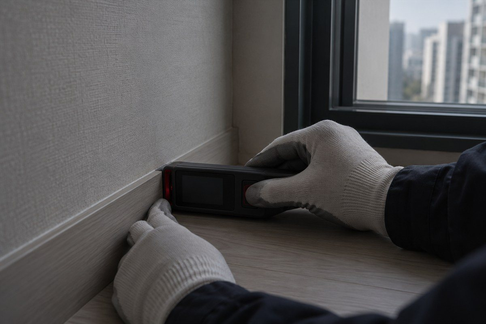
사전점검 업체가 알려 주는 하자보수 확인법
많은 입주 예정자가 온하임을 고르는 이유
사전점검 업체를 고를 때는 하자를 몇 개 찾느냐보다 정확하고 한결같은 기준으로 점검하는지를 먼저 봐야 합니다. 온하임은 전국 곳곳의 신축 단지에서 입주 예정자의 선택을 받아 온 사전점검 회사입니다. 2018년부터 사전점검을 해 온 경험을 바탕으로, 사람 수에 기대는 서비스가 아니라 안전진단 전문기관으로서 점검 기준을 차근차근 세워 왔습니다. 현장에서 고객과 직접 만나며 쌓은 하자 데이터는 온하임이 가진 가장 큰 자산입니다.
온하임은 사전점검 체계와 절차를 직접 만들어 운영합니다.
1. 안전진단 전문기관 등록과 구조 엔지니어링 면허를 함께 갖춘 회사
온하임은 전문 기술 인력과 운영 조직이 함께 일하는 엔지니어링 회사로, IT 기술 개발부터 하자진단 연구까지 쉬지 않고 이어 가고 있습니다.
2. 2018년부터 쌓아 온 현장 경험
온하임은 8년째 사전점검을 해 오며 고객을 직접 만나 서비스를 다듬어 온 회사입니다. 그 경험으로 많은 점검 인력과 장비를 갖췄고, 하루에 수백 세대를 맡아도 무리 없이 돌아가는 체계를 만들었습니다. 일이 몰려도 품질이 떨어지지 않도록 기술 개발도 함께 해 왔습니다.
3. 자체 기술 개발로 점검 효율 높이기
온하임은 같은 시간 안에 더 빠르고 정확하게 점검할 수 있는 기술을 직접 개발하고 있습니다. 그 덕분에 점검 효율을 크게 끌어올렸고, 예전에는 2주 가까이 걸리던 점검 보고서를 이제는 점검 당일 받아 보실 수 있습니다. 예약부터 보고서 확인, 보수 관리까지 모든 과정에 자체 시스템을 들여 이용하기 편하게 바꿨고, 관련 특허도 여러 건 등록했습니다.
4. 직접 고용한 전문가가 끝까지 책임지는 점검
온하임은 서비스 품질이 흔들리지 않도록 외부 업체와 손잡지 않고, 직접 둔 국가자격 전문가만 현장에 보냅니다. 잠깐 쓰는 외주 인력이 아니라서 점검 결과를 끝까지 책임지고, 입주자가 리포트를 들고 보수를 요청하는 과정까지 자세히 안내합니다.
5. 하자마다 판례·조정 사례를 붙인 리포트
온하임 사전점검 리포트는 하자마다 비슷한 분쟁 판례와 국토교통부 하자심사·분쟁조정 사례를 이어 드립니다. 점검 결과가 찾은 목록으로 끝나지 않고, 시공사가 보수를 거절할 때 바로 꺼낼 수 있는 협의 근거가 됩니다.
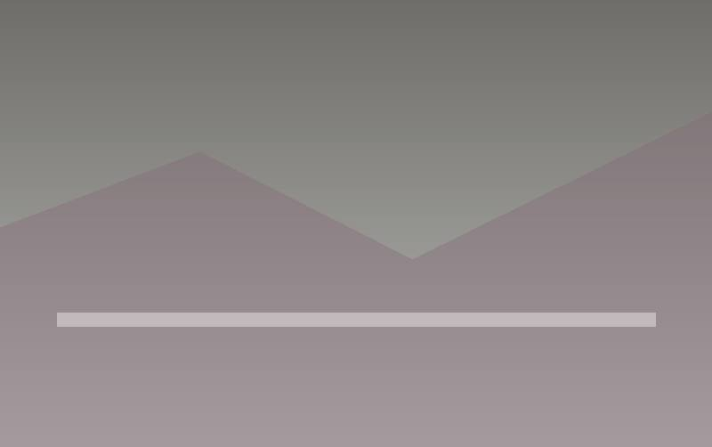
사전점검 대행 온하임, 모든 현장에 건축 전문가 배정
온하임과 함께한 고객들이 직접 들려준 이야기
사전점검 서비스가 얼마나 쓸모 있었는지는 직접 이용한 분들의 경험에서 드러납니다. 온하임을 이용한 입주 예정자들은 하자를 많이 찾았다는 점보다 점검 과정을 믿을 수 있었다는 점에 더 높은 점수를 주셨습니다. 전문가 설명이 알아듣기 쉽고 실제 문제 해결에 도움이 됐는지, 점검이 한결같았는지, 보고서가 보수 요청 때 쓸모 있었는지 같은 경험이 그대로 담겨 있습니다. 점검뿐 아니라 예약 단계부터 세대마다 다른 질문까지, 고객 입장에서 생각하며 서비스를 꾸리려고 애쓰고 있습니다. 이런 후기는 온하임이 하자만 찾아 주는 업체가 아니라 입주 예정자가 마음 놓고 이사할 수 있게 돕는 동반자로 자리 잡았다는 뜻입니다.
1. "건축 전문가라 설명이 한층 깊었어요."
"처음엔 업체가 다 거기서 거기일 줄 알았어요. 그런데 오신 분이 국가자격증을 가진 경력 많은 전문가셔서, 설명을 들을 때마다 믿음이 갔습니다. '여기 흠집 있어요'로 끝내지 않고 '이건 시공할 때 이런 이유로 생긴 거라 이렇게 고쳐 달라고 하세요'라고 하나하나 짚어 주셨어요. 덕분에 한결 마음이 놓였습니다." — 서울 서초구 신축 단지 입주자
2. "교육을 제대로 받은 분이라는 게 현장에서 느껴졌어요"
"점검하는 모습만 봐도 손에 익은 순서가 있다는 게 보였어요. 장비를 다루는 손놀림도, 하자를 가르는 기준도 분명했습니다. 온하임이 전문가 교육을 꾸준히 한다고 들었는데, 왜 그런 말이 나오는지 현장에서 바로 알겠더라고요." — 경기 과천시 신축 단지 입주자
3. 점검 리포트를 받아 보니 왜 고르는지 알겠어요
"하자 개수만 채운 게 아니라 앱에 쉽게 올릴 수 있게 순서까지 맞춰 둔 리포트를 보고 감동했어요. 수많은 집을 점검해 본 경험이 이런 작은 배려에서 보이더라고요. 전문가의 눈과 꼼꼼한 리포트 덕분에 기분 좋게 입주합니다." - 인천 연수구 신축 단지 입주자
신축 아파트 입주 전 온하임 하자점검을 받아 본 고객 후기
건축물 하자진단이 필요한 이유
건축물 하자진단은 균열이나 파손뿐 아니라 짓는 과정 전체에서 생긴 잘못을 기술적으로 증명하는 일입니다. 건물은 구조, 마감, 설비, 방수, 단열 같은 수많은 공정이 맞물려 있어, 그중 하나만 어긋나도 시간이 지나 여러 모습의 하자로 나타납니다. 특히 새 건물은 처음엔 문제가 잘 보이지 않다가 쓰는 동안 누수, 결로, 균열, 기능 저하 같은 문제가 드러나는 일이 많습니다. 하자진단은 이런 하자의 원인을 도면에 비춰 분석하고, 누가 책임을 지고 어디까지 고쳐야 하는지를 분명히 하는 과정입니다. 시공사와 보수를 협의하거나 하자소송으로 갈 때 하자진단 자료는 가장 중요한 근거가 됩니다.
건축물에 하자가 생기는 까닭
건물은 여러 사람의 손과 여러 공정을 거쳐 지어집니다. 콘크리트 구조, 창호, 배관, 전기설비, 방수, 마감재처럼 서로 다른 분야의 공사가 한데 맞물려야 비로소 건물 한 채가 완성됩니다. 이 과정에서 작은 실수가 생기지 않을 수 없습니다. 기계로 찍어 내는 자동차나 휴대폰에서도 불량이 나오는데, 현장에서 사람 손으로 짓는 건물은 하자가 생길 가능성이 훨씬 클 수밖에 없습니다.
건축물 하자란?
하자에는 눈에 보이는 문제뿐 아니라 구조에 생긴 문제, 설비를 잘못 시공한 것까지 모두 들어갑니다. 신축 아파트 입주민이라면 수억 원을 들여 산 집에 하자가 있다는 것부터 받아들이기 어렵습니다. 이럴 때는 왜 생겼는지 정확히 짚고, 어떻게 보수를 받아 낼지 해결책을 세워야 합니다.
하자보수를 해 주지 않을 때 대응하는 법
안타깝게도 건물을 지은 건설사는 이익을 내야 하는 회사라 하자를 되도록 인정하지 않으려 합니다. 대부분의 하자를 시공 결함이 아니라 관리 소홀 같은 다른 이유로 돌리며 책임을 피합니다. 시공사가 보수를 계속 미루면 입주민은 하자진단을 받은 뒤 하자소송을 진행하게 됩니다. 하자소송은 생긴 하자를 점검하고, 입주민이 시공 주체에게 보수를 받거나 그만큼의 보수비를 받아 내는 과정입니다.
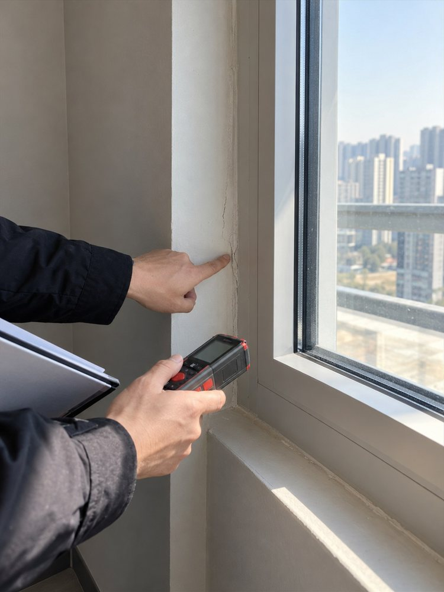
하자진단 보고서로 하자보수 소송과 법적 증거 준비하기
건물 종류에 따라 달라지는 하자소송의 갈래와 특징
하자소송은 건물 종류에 따라 적용되는 법과 대응 방식이 다릅니다. 아파트나 오피스텔 같은 집합건물은 전유부분과 공용부분이 나뉘어 있어, 하자가 어디에 있느냐에 따라 보상받을 수 있는 범위가 달라집니다. 단독주택이나 다가구주택 같은 단독건물은 건물 전체가 한 소유 구조라서, 하자 책임을 민법과 계약 내용에 따라 판단합니다.
건물 종류에 따른 하자소송의 특징과 절차를 모르면 보수를 요구할 수 있는 때를 놓치거나 잘못된 방법으로 소송을 끌고 가게 됩니다. 하자진단과 소송을 준비할 때는 건물 종류마다 다른 법적 구조와 전략을 꼭 나눠서 봐야 합니다.
여러 사람이 나눠 가진 건물 (아파트, 오피스텔 등)
집합건물에는 아파트, 오피스텔, 다세대주택, 상가 등이 들어갑니다. 여러 구분소유자가 건물을 나눠 갖는 구조라, 하자 분쟁이 생기면 소유자들이 함께 모여 조직적으로 대응하는 게 중요합니다. 관리단이나 입주자대표회의가 꾸려져 있느냐에 따라 진행 속도도 크게 달라집니다. 집합건물법과 주택법 같은 관련 법을 알아야 하고, 법에서 정한 절차대로 의결을 거치는 과정이 소송에 꼭 필요합니다.
공동주택 : 아파트·연립·다세대처럼 여러 가구가 사는 집, 기숙사 포함 준주택 : 오피스텔 (겉모습은 주택이지만 법적으로는 주거와 업무가 섞인 건물) 비주거 집합건물 : 상가, 지식산업센터(아파트형 공장) 같은 업무·상업용 건물
한 사람이 통째로 가진 건물 (단독주택, 다가구주택 등)
단독건물은 건물 전체를 한 사람이 가진 형태라 공용부분과 전유부분을 나누지 않습니다. 따로 떨어진 공용부분이 없으니 건물 전체가 하자진단 대상이 됩니다.
하자가 생기면 소유자가 시공사와 직접 합의하거나 보수를 요청해야 합니다. 책임을 따지는 기준은 집합건물법이나 공동주택관리법이 아니라 민법과 개별 계약 내용입니다. 그래서 구조, 마감, 설비 하자마다 하자의 성격, 계약 내용, 보통 기대되는 품질을 기준으로 책임이 있는지를 판단합니다.
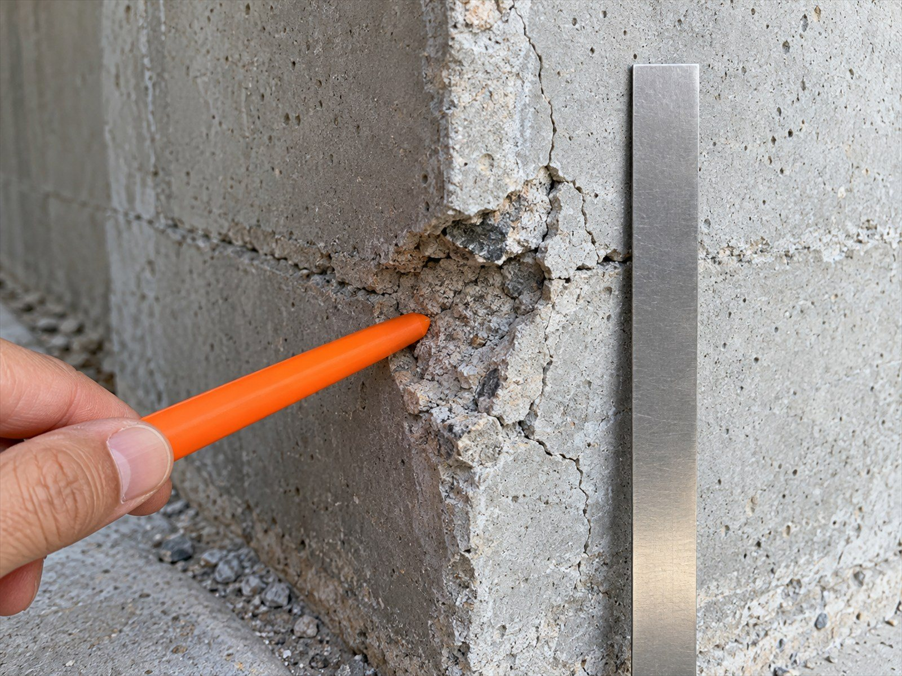
건물 소유 구조에 따라 달라지는 하자소송 대응법
법원은 건축물 하자를 어떻게 볼까?
하자소송에서 '하자'인지 아닌지는 당사자의 느낌이 아니라 법원이 세운 기준으로 정해집니다. 판단은 객관적인 기준과 자료를 중심으로 이뤄집니다. 법원은 건물이 준공 당시 갖춰야 했던 기능과 성능을 채웠는지, 약속한 품질에 못 미치는지를 보고 하자를 판단합니다. 그래서 하자를 주장하려면 사진 몇 장이나 설명만으로는 모자라고, 설계·시공·준공 과정 중 어디가 잘못됐는지 근거를 들어 증명해야 합니다. 아래에서 법원이 말하는 하자의 뜻과, 소송에서 하자로 인정되는 기준을 살펴보겠습니다.
하자의 법적 정의
법적으로 하자란 건물이 다 지어졌을 때 보통 갖춰야 할 내구성, 품질, 안전성을 제대로 갖추지 못한 상태를 말합니다. 처음부터 건물 성능이 모자랐거나, 분양 계약서와 시방서에 적힌 것보다 못한 자재로 시공했다면 하자로 봅니다. 법원은 하자가 있는지 가릴 때 준공도면을 가장 중요한 기준으로 삼고, 현행 건축 법규와 국가 표준 시방서를 지켰는지도 함께 따집니다.
하자 유형 3가지
법원은 건물 하자를 얼마나 심각한지, 어떤 성격인지에 따라 안전상·기능상·미관상 하자 세 갈래로 나누고, 갈래마다 증명 방법과 보수비 산정 기준을 달리 적용합니다. 각 하자는 건물 가치를 가르는 중요한 요소이자 소송에서 배상액을 정하는 기준이 됩니다.
안전상 하자 : 건물 구조의 안전, 화재 예방, 전기·소방 설비처럼 사는 사람의 생명과 바로 이어지는 하자입니다. 기둥이나 내력벽의 위험한 균열, 철근 노출, 소방 연동 장치가 작동하지 않는 경우 등이 여기에 들어갑니다. 기능상 하자 : 건물을 원래 쓰임새대로 쓰는 데 실제로 지장을 주는 결함으로, 생활하면서 가장 자주 마주치는 하자입니다. 창호가 잘 여닫히지 않거나 배수구가 역류하는 경우, 결로와 누수가 되풀이되는 경우, 단열재가 빠진 경우가 대표적입니다. 미관상 하자 : 마감재 얼룩이나 긁힘, 도장 불량, 타일 높이가 크게 어긋난 것처럼 눈에 바로 띄는 겉모습의 결함입니다. 기능에는 문제가 없더라도 건물 전체 완성도를 떨어뜨려 재산상 손해를 보고 있다는 점을 내세워야 합니다.
하자진단 전에 챙겨야 할 서류
하자소송에서 시공사 잘못을 증명하는 가장 강한 증거는 설계도면을 비롯한 준공도서입니다. 하자 기준이 애매할 때는 준공도면의 수치와 기준점으로 판가름하고, 다른 도면들은 시공 단계마다 다른 몫을 합니다.
사업승인도면 : 주택사업 승인을 받으려고 지자체에 내는 가장 기본적인 설계도로, 건물 전체 배치와 세대별 내부 구조처럼 사업의 뼈대가 되는 정보가 담겨 있습니다. 다 지은 건물이 분양 때 설명과 크게 다르다면, 사업승인도면과 맞대어 보며 속였는지 계약을 어겼는지를 가리는 기초 자료로 씁니다. 착공도면 : 공사를 시작하기 직전에 최종 확정하는 도면으로, 자재의 상세 규격, 부품 치수, 부위별 시공 방법이 자세히 적혀 있습니다. 눈으로는 볼 수 없는 전선 배관 위치, 철근 배근 간격, 슬래브 두께처럼 건물 내구성과 바로 이어지는 사양도 들어 있습니다. 준공도면 : 건물이 다 지어진 뒤 실제 시공된 모습과 똑같이 그린 마지막 도면입니다. 공사 중 바뀐 내용을 모두 반영해 사용승인을 받을 때 행정기관에 내는 문서라서, 법원은 이 도면을 하자 여부를 가리는 첫째 기준으로 삼습니다.
하자진단 때 함께 있으면 좋은 서류
하자진단에는 준공도면, 착공도면, 사업승인도면이 꼭 있어야 합니다. 이 밖에 국가가 정한 시공 품질 기준과 공정별 세부 규칙을 풀어 놓은 시방서, 자재와 비용이 적힌 내역서도 필요합니다. 이런 내용은 너무 기본이라 일반 도면에는 빠져 있지만, 시공사가 이를 지키지 않았다면 다시 시공하거나 입주민에게 보상해야 합니다.
시방서 (표준 및 특기) 표준시방서는 건축 공사 때 국가가 정해 둔 최소한의 시공 기준과 품질 지침입니다. 특기시방서는 그 공사에만 따로 적용되는 발주자의 요구와 세부 기준을 담은 문서입니다. 도면에 나오지 않는 재료 품질과 시공 순서가 적혀 있어, 하자가 생겼을 때 시공사가 정해진 절차를 지켰는지 판단할 수 있습니다.
내역서 내역서에는 어떤 자재를 얼마의 비용으로 써야 하는지가 적혀 있어, 값싼 자재로 바꿨거나 정해진 수량보다 적게 시공했다면 이를 근거로 보수비를 청구할 수 있습니다.
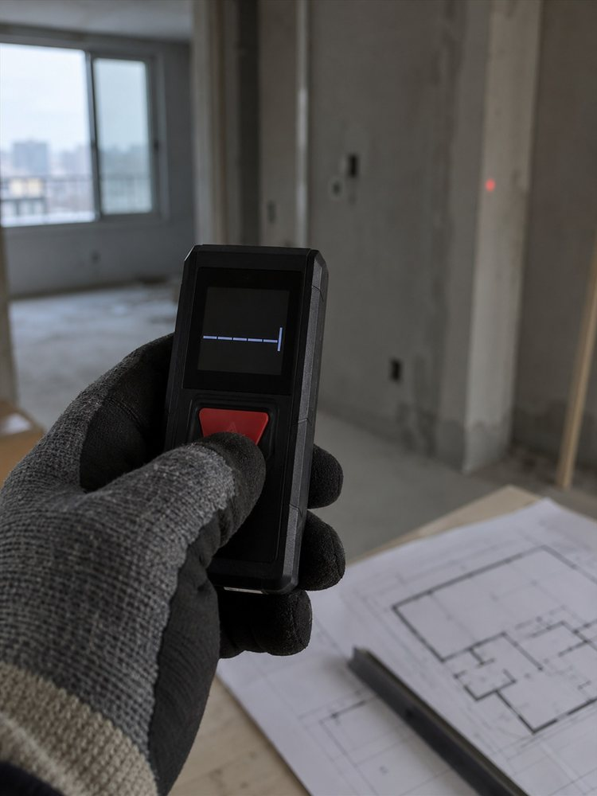
준공도면, 판결을 가르는 첫째 근거
하자소송까지 가야 하는 경우
새 건물에 하자가 생기면 건축주나 입주민은 안전진단 전문기관에 하자진단을 맡깁니다. 진단을 하면 설계도면과 다르게 지은 곳, 아예 빠뜨린 곳, 잘못 지은 곳이 하나씩 드러납니다. 입주민은 이 하자진단 보고서를 들고 건설사에 보수를 요청하는데, 건설사가 끝내 응하지 않으면 결국 하자소송으로 건설사와 다투게 됩니다.
책임기간은 얼마나 될까?
공동주택관리법과 관련 법령이 정한 하자담보책임기간은 사업주체가 건물 결함을 무상으로 고쳐 줘야 하는 법적 기간입니다. 건물 종류에 따라 적용되는 법이 다르지만, 아파트는 하자가 얼마나 중요한지와 시설이 얼마나 오래 버티는지에 따라 2년, 3년, 5년, 10년으로 나뉩니다. 신축 아파트 입주민은 이 기간 안에 시공사에 하자를 정식으로 접수하고 그 기록을 증거로 남겨 둬야 법의 보호를 받을 수 있습니다.
하자담보책임기간 표
2년 : 마감 공사 — 도배·도장, 타일 갈라짐, 가구 결함 3년 : 창호와 문 여닫힘, 단열, 난방, 보일러·위생 배관 누수, 배수, 소화 설비, 승강기, 전기 배선 같은 설비 결함 5년 : 옥상·외벽 방수층 손상, 외부 석재 갈라짐, 옹벽 금 등 10년 : 콘크리트 갈라짐과 철근 노출, 기초·지반 내려앉음, 내력벽 금, 구조 안전성
공사 종류마다 청구할 수 있는 기한이 달라서, 입주자대표회의는 연차별 책임기간이 끝나기 전에 하자진단을 받아 빠지는 항목이 없게 챙겨야 합니다.
세대 안과 공용 공간, 하자가 다른 이유
아파트 하자 분쟁에서 전유부분과 공용부분을 나누는 일은 단순히 공간을 가르는 게 아닙니다. 같아 보이는 하자라도 어디에 생겼느냐에 따라 보수를 요청하는 방법, 고칠 책임이 있는 쪽, 대응 절차가 달라집니다. 전유부분 하자는 각 세대의 재산과 바로 이어지고, 공용부분 하자는 입주민 모두의 자산 가치와 이어집니다. 고칠 수 있는 하자도 제대로 요청하지 않으면 보수를 받지 못할 수 있습니다. 그래서 하자소송을 준비할 때는 하자진단으로 하자가 어디에 있는지뿐 아니라 어떤 종류인지도 가려 두어야 합니다.
전유부 하자
전유부분 하자에는 벽지 들뜸, 바닥 타일 금, 세대 안 싱크대 불량 같은 것이 있고, 집주인이 각자 보수를 신청할 수 있습니다. 건설사가 고쳐 주지 않으면 세대별로 따로 소송을 걸 수도 있지만 절차가 번거롭고 비용도 커서 혼자서는 감당하기 어렵습니다. 그래서 입주자대표회의가 집주인들에게 권리를 넘겨받아 함께 하자소송을 진행합니다.
공용부 하자
공용부분 하자는 옥상 방수 결함, 외벽 금, 지하주차장 누수처럼 입주민 모두가 쓰는 시설에 생긴 하자입니다. 보통 입주자대표회의나 관리사무소 시설 담당자가 입주민을 대신해 점검하고 보수를 요청합니다. 다만 입주자대표회의가 도면을 직접 읽거나 장비를 갖추기는 어려워서, 대부분의 신축 단지는 하자진단 전문업체를 정해 점검을 맡깁니다.
하자진단 전문기관이 필요한 이유
단순한 파손이나 흠집은 입주자대표회의나 관리사무소가 직접 조사해 보수를 요청할 수 있습니다. 하지만 가장 큰 하자인 변경시공, 미시공, 오시공은 전문가가 직접 진단해야 합니다. 하자진단 전문업체는 안전진단 면허를 가진 회사로, 건축 기술 인력이 늘 상주합니다. 이들은 준공도면을 바탕으로 단지마다 다른 특성을 파악하고, 어디에 어떤 하자가 있는지, 어떻게 고쳐야 하는지, 보수비로 얼마가 알맞은지를 진단해 보고서로 정리합니다.
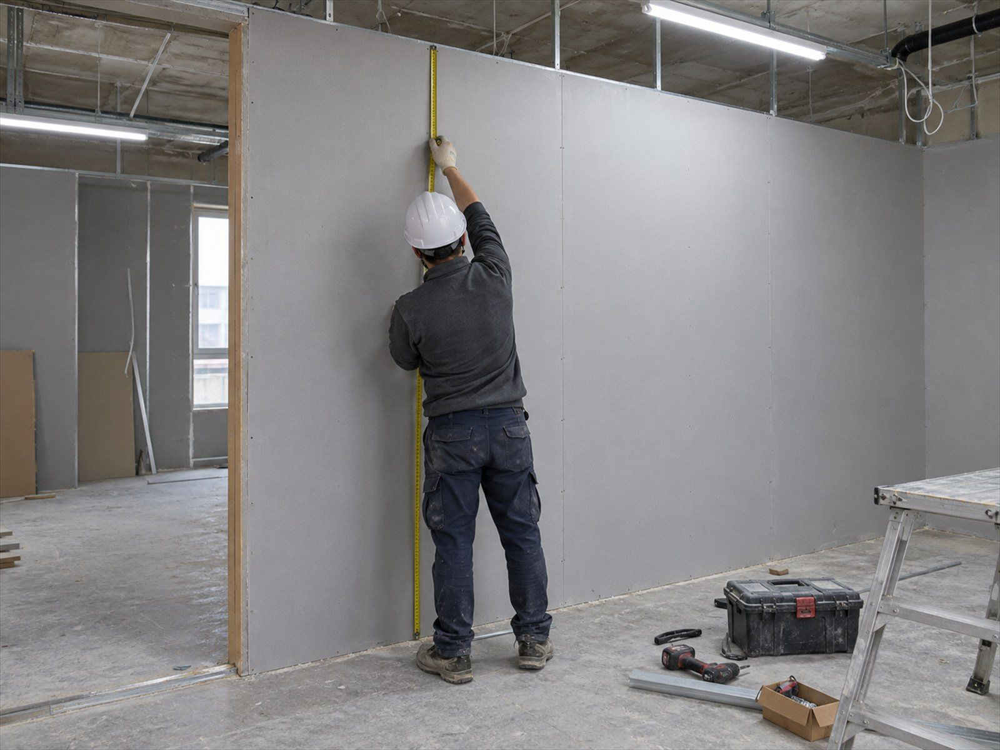
하자담보책임기간 안에 전유·공용부분 하자진단을 받아야 하는 이유
하자보수를 받아 내는 방법
하자보수를 받으려면 먼저 건물에 생긴 하자를 분명하게 진단해야 합니다. 앞에서 말했듯 하자진단 전문업체와 계약한 뒤 눈으로 보는 점검과 장비 점검을 함께 진행합니다. 입주자들은 진단 보고서를 근거로 시공사에 보수를 요청하고, 미시공·변경시공 부분은 보상을 먼저 요구할 수 있습니다. 시공사가 이 요청에 응하지 않으면 그때 시공사를 상대로 소송을 진행합니다.
채권양도는 어떻게 진행될까
입주자대표회의(입대의)는 구분소유자가 아니어서 원칙적으로 직접 손해배상을 청구하기 어렵습니다. 그래서 입주민들에게 채권을 넘겨받아야 손해배상 청구권을 쓸 수 있습니다. 채권양도란 내가 가진 청구 권리를 다른 사람에게 넘기는 것입니다. 서류만 쓰고 끝나는 게 아니라, 넘긴 사실을 시공사에 공식적으로 알려 법적 대항력을 갖춰야 비로소 마무리됩니다. 채권양도에 참여하지 않은 세대의 하자는 판결 범위에서 빠져 보상을 받지 못하니, 입주자대표회의는 되도록 많은 세대가 참여하도록 절차의 중요성을 알리고 참여를 이끌어야 합니다.
하자소송 전에 시공사와 합의하면 좋은 점
합의는 소송에 드는 긴 시간과 큰 비용을 아낄 수 있어 하자 분쟁을 푸는 좋은 방법이 될 수 있습니다. 하자소송은 보통 판결까지 몇 년이 걸리고 감정비와 변호사비 같은 초기 비용도 필요하지만, 합의하면 비교적 빨리 보수를 받거나 현금을 받아 직접 고칠 수 있습니다. 시공사도 소송으로 브랜드 이미지가 깎이는 걸 막으려고 먼저 합의를 제안하는 경우가 많고, 입주민은 소송 스트레스에서 벗어나 하자를 해결하는 데 집중할 수 있습니다.
사용검사 후 하자
사용검사 후 하자는 건물이 완공돼 사용승인을 받은 뒤에 드러나는 결함으로, 시공 때 생긴 결함이 시간이 지나며 나타나는 흔한 유형입니다. 균열, 누수, 파손처럼 눈에 보이는 물리적 문제가 대부분이고, 시공사는 법이 정한 하자담보책임기간 안에 생긴 하자를 성실히 고칠 법적 의무가 있습니다. 시공사가 인력이나 기술이 모자라 직접 고치지 못하거나 계속 피한다면, 그 하자를 고치는 데 드는 적정 비용을 계산해 돈으로 물어 줘야 합니다.
준공 전에 생긴 하자 (도면과 다르게 짓거나 빠뜨린 경우)
사용검사 전 하자는 건물이 완공되기 전, 시공 단계에서 이미 생긴 결함으로, 설계도면에 적힌 자재를 쓰지 않았거나 시공을 빠뜨린 경우를 말합니다. 눈에 잘 띄지 않는 벽 속이나 지하 설비층에서 주로 발견되고, 시공사가 공사비를 아끼려고 마음대로 사양을 바꾼 경우가 많아 입주민에게 금전적 손해를 줍니다. 건물이 이미 다 지어진 상태라 다시 시공하기 어렵기 때문에, 대개 보수 대신 그만큼의 금액을 물어 주거나 다른 편의시설을 더 지어 주는 방식으로 합의합니다
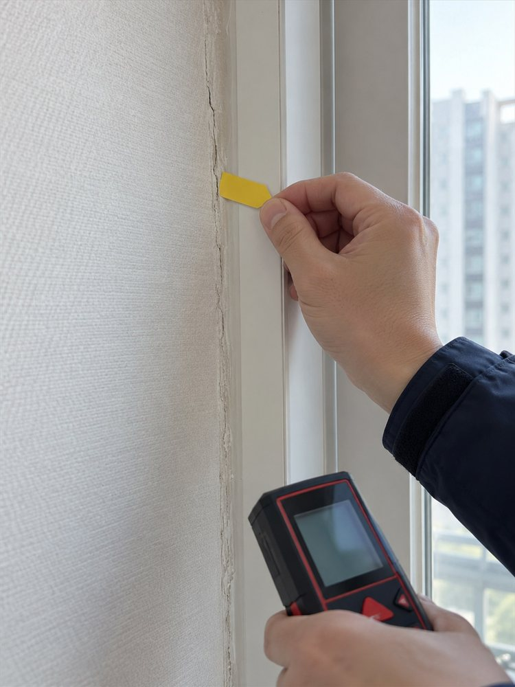
준공 전후 하자를 두고 입대의가 거치는 채권양도와 합의
하자소송에서 법무법인이 하는 일
하자소송은 객관적인 하자 데이터를 바탕으로 시공사의 법적 책임을 따지는 과정입니다. 일반 입주민이 건설사를 상대로 직접 소송을 하기에는 전문 지식이 모자라고, 드는 시간과 비용도 개인이 감당하기 어렵습니다. 그래서 보통 하자소송 경험이 많은 전문 법무법인을 선정합니다. 법무법인은 하자진단 데이터로 산정한 손해배상액이 법원에서 인정받도록 돕고, 시공사와 조율해 입주민이 빠르고 안정적으로 보수나 보상을 받을 수 있게 이끕니다.
아파트 하자소송을 맡길 법무법인 고르기
공동주택에서 하자보수를 받으려면 먼저 하자진단 업체를 정해 진단을 받습니다. 진단 결과로 합의가 되지 않으면 법무법인을 선정하고, 법무법인은 진단 내용을 근거로 소송을 진행합니다. 다시 말해 소송을 이끄는 쪽은 법무법인이고, 온하임 같은 하자진단 전문기관은 진단을 맡아 기술적인 부분에서 소송을 뒷받침합니다.
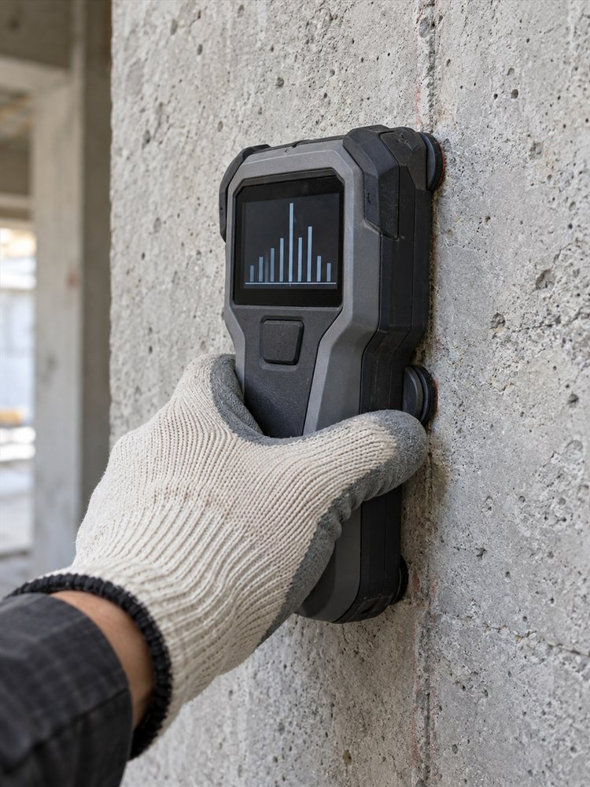
법무법인과 하자진단 업체가 함께 세우는 소송 전략
하자소송 절차와 감정이 중요한 이유
하자소송이 시작되면 법원은 건물 하자처럼 기술적 판단이 필요한 쟁점에 대해 감정인을 정해 하자인지 아닌지를 판단하게 합니다.
하자 감정은 하자가 있는지, 어디까지인지, 고쳐야 하는지, 비용은 얼마인지를 제3자 입장에서 따지는 과정입니다. 감정이 어떻게 진행되느냐에 따라 인정되는 하자 범위가 달라지고 손해배상 규모도 바뀝니다. 그래서 감정 단계에서 시공사 잘못을 증명할 정확한 위치 같은 근거 자료를 내고 전문적으로 대응하는 것이 이기기 위한 가장 중요한 전략입니다.
하자소송은 어떤 순서로 진행될까
하자소송에서 원고는 하자진단 전문기관과 법무법인을 정해 소송을 이끌고, 피고인 건설 주체는 이에 맞서 다툽니다. 재판부는 객관적인 판단을 위해 감정인을 따로 지정하고, 감정인이 직접 감정 절차를 밟습니다. 감정 결과가 나오면 원고와 피고는 결과를 검토한 뒤 추가 의견을 냅니다.
소송 의결 : 입대의 구성원 과반수가 찬성하면 소송을 제기하기로 정하고, 관리규약에 따로 정한 절차가 있으면 그대로 밟으며, 배상 청구에 필요한 세대별 채권양도를 받습니다. 소장 접수와 송달 : 하자진단 결과를 근거로 청구 취지를 밝혀 법원에 소장을 냅니다. 준비서면·답변서 주고받기 : 피고는 소장을 받은 뒤 하자를 인정하는지, 책임을 어떻게 나눌지에 대한 주장을 정리해 법원에 냅니다. 감정 절차 시작 : 감정서가 나오면 보완과 사실조회를 거치고, 종합 변론을 거쳐 최종 판결을 받습니다.
하자 감정의 의의
하자 감정은 건물이나 시설에 생긴 결함이 준공도면과 다르게 시공된 것인지, 아니면 준공 뒤 다른 이유로 생긴 것인지를 기술적으로 가리는 절차입니다. 요즘 공법이 복잡해지고 하자도 잦아지면서 감정을 받는 사례가 늘고 있습니다. 원래는 재판관이 직접 확인해야 하지만 건축 전문 지식이 없어 판단하기 어려운 부분을 전문가(하자감정인)에게 맡기는 증거조사 방법입니다.
하자 감정의 중요성
하자 감정은 하자소송에서 가장 중요한 절차입니다. 법원은 건물 하자에 대한 전문 지식이 부족해 감정인이 쓴 감정서를 가장 객관적인 증거로 받아들입니다. 실제로 판결문의 청구금액이나 보수 범위가 감정서 내용을 그대로 옮기는 경우가 많아, 감정 결과가 사실상 판결의 길잡이가 됩니다. 그래서 감정인이 얼마나 전문적으로 일하는지, 경력과 경험이 충분한지에 따라 소송 결과가 달라질 수 있습니다.
하자감정인은 보통 건축사, 건축시공기술사, 건축구조기술사 같은 자격을 갖추고 법원 감정인 명단에 오른 전문가 중에서 법원이 정합니다.
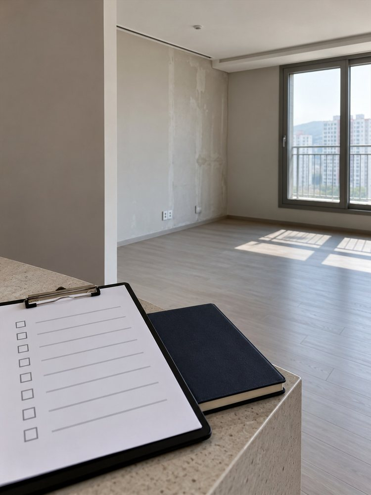
하자소송의 결과를 가르는 하자감정
시공사가 부도나도 보수비를 지키는 장치, 하자보수보증금(하자보수 예치금)
하자보수보증금은 시공사가 하자보수를 하지 못할 때를 대비한 법적 안전장치입니다. 지금 법은 시공사가 보수를 피하거나 파산해서 고치지 못할 때 입주민 피해를 막으려고, 공사비 일부를 미리 맡겨 두거나 보증보험에 들도록 정하고 있습니다. 시공사가 파산하거나 보수를 거부하면 입주민은 이 보증금을 청구해 보수 공사를 합니다.
다만 보증금은 전체 공사비의 3% 안팎이라, 중대한 하자가 많이 나오면 실제 보수비에 못 미칠 수 있습니다. 보증 기간 안에 생긴 하자만 청구할 수 있어서 모든 하자 분쟁을 해결하는 수단으로 보기는 어렵습니다.
하자보수보증금, 쓰임은 엄격하게 묶여 있습니다
이 돈은 하자를 고치는 데에만 써야 합니다. 관리비나 다른 사업에 돌려쓰는 것은 허용되지 않습니다.
예치금은 전체 공사비의 3%만 맡겨 두기 때문에 실제 보수비보다 모자랄 때가 있습니다. 이럴 땐 하자소송으로 더 큰 손해배상금을 받는 편이 낫지만, 시공사가 부도났다면 이 보증금이 거의 유일한 대안입니다.
건물마다 다른 보증금 청구 절차
하자보수보증금을 청구하는 법적 근거와 절차는 건물 종류마다 다릅니다. 다가구주택·공장·병원처럼 건축주가 한 명인 경우, 오피스텔·상가·지식산업센터처럼 소유자가 나뉜 집합건물인 경우, 아파트·빌라처럼 소유자가 나뉘면서 공동주택관리법을 적용받는 경우로 크게 나뉘고, 각각 청구 방법이 모두 다릅니다.
신축 빌라 : 입주 세대끼리 협의체를 꾸려 하자진단을 마친 다음 보증금을 청구합니다. 신축 공장·병원 : 건축주가 진단 업체를 골라 균열 같은 하자를 조사하고 시공사에 보수를 요구합니다. 끝내 응하지 않으면 그때 보증금을 청구합니다. 신축 집합건물·빌딩 보증금 청구 : 구분소유자들이 관리단을 꾸려 건물 안 하자를 진단합니다. 진단 데이터를 바탕으로 건설사와 보수 요청, 보증금 청구 협상을 벌입니다.
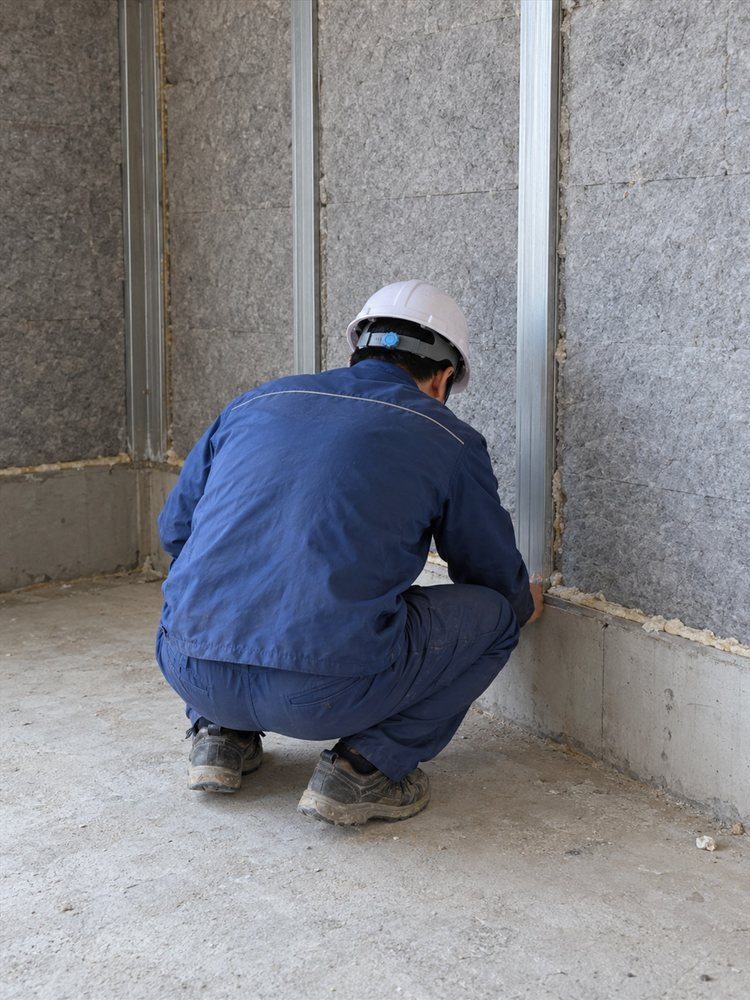
시공사가 부도났을 때 건물 종류별 하자보수보증금 청구 과정
하자소송의 핵심, 미시공과 변경시공 증명
요즘 하자소송의 승부는 균열이나 마감 불량을 넘어, 설계도면과 실제 시공 상태가 얼마나 다른지를 증명하는 데서 갈립니다. 일반 하자 보수비보다 미시공이나 오시공에 대한 보상금이 훨씬 크기 때문입니다. 설계도서나 계약서에 적힌 자재나 공법이 현장에 반영되지 않았다면 시공사에 계약 위반과 법적 책임을 분명히 물을 수 있는 근거가 됩니다. 그래서 소송을 잘 치르려면 준공도면과 시방서 같은 문서를 바탕으로 하자진단을 해야 합니다.
미시공·변경시공 하자가 소송 결과를 가르는 이유
일반적인 시공 결함은 낡아서 생긴 것 아니냐는 식으로 다툴 여지가 많습니다. 훨씬 분명하고 강한 무기는 앞에서 말한 미시공과 변경시공 항목입니다.
미시공 하자 : 설계도면이나 시방서에 분명히 있어야 할 공사가 현장에서 빠진 경우입니다. 도면에는 방수층을 두 겹으로 하라고 돼 있는데 실제로는 한 겹만 깐 경우가 대표적입니다. 변경시공 하자 : 도면과 달리 시공사가 자재, 공법, 치수를 마음대로 바꿔 시공한 경우입니다. 분양 때 카탈로그나 내역서에는 비싼 수입 자재를 쓰겠다고 약속하고 실제로는 값싼 자재로 시공한 사례가 여기에 해당합니다.
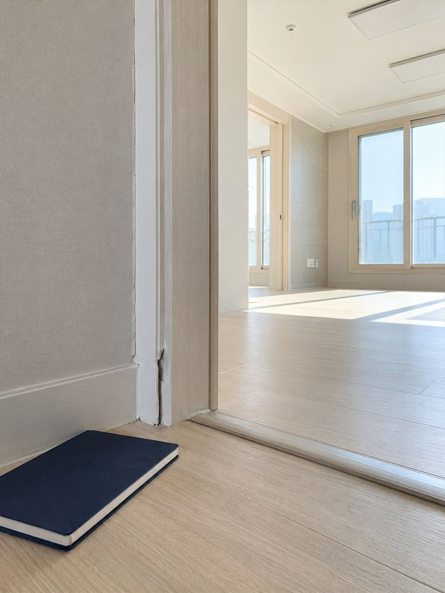
보수비 규모를 좌우하는 미시공·변경시공 하자
하자진단 업체 온하임이 다른 점
하자가 늘면서 하자진단 업체도 여기저기 생겨나고 있습니다. 그래서 업체를 고를 때는 안전진단전문기관 등록, 엔지니어링 면허, 상주 기술 인력 규모, 보고서 쓰는 방식을 함께 따져 보는 게 좋습니다.
온하임은 수많은 세대를 점검하며 쌓은 경험을 바탕으로 전유부분과 공용부분을 점검합니다. 안전진단전문기관 등록과 구조 엔지니어링 면허를 갖추고, 전문 기술자가 상주하는 엔지니어링 회사입니다. 직접 만든 현장기록 도구로 손이 많이 가던 업무를 크게 줄였습니다.
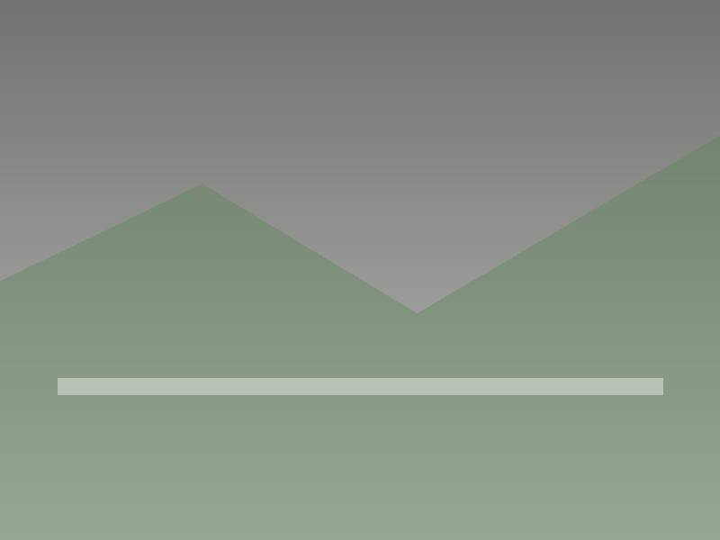
구조 엔지니어링 면허를 갖춘 하자진단 전문기관 온하임
건축물·시설물 안전진단, 법이 정한 대상과 뜻
건물 안전관리는 건물이 낡는 걸 막는 데서 그치지 않고, 법적 의무를 지켜 사는 사람의 생명을 보호하고 사고가 났을 때 관리 주체의 책임을 분명히 하는 행정 절차입니다. 그래서 나라에서는 건물의 규모와 상태에 따라 점검 강도를 세 단계로 나눠 관리합니다.
온하임은 시설물안전법에 따라 정기안전점검, 정밀안전점검, 정밀안전진단, 내진성능평가를 맡는 건축·토목 안전진단 전문기관이자, 구조 엔지니어링 면허를 갖춘 진단 회사입니다.
1
제1종 시설물
1종 — 연면적 5만㎡ 또는 21층 넘는 대형 빌딩
2
제2종 시설물
2종 — 16층 이상이거나 연면적 3만㎡ 넘는 건물
3
제3종 시설물
지은 지 15년 넘은 중소형 빌딩 가운데 위험한 건물
1. 어느 법을 따르고 무엇을 점검하나
우리나라 건물은 대개 시설물안전법(시특법)과 건축물관리법으로 관리됩니다. 두 법이 겨냥하는 대상과 목적이 서로 달라서, 건물을 어디에 쓰는지와 얼마나 큰지에 따라 어느 법을 적용받는지가 갈립니다. 시설물안전법은 사고를 막는 데, 건축물관리법은 불법으로 쓰이는지와 관리 상태를 살피는 데 목적이 있습니다.
2. 시설물 종류를 나누는 기준과 점검 대상
시설물안전법은 시설물을 제1종, 제2종, 제3종으로 나눕니다. 나누는 기준은 연면적, 용도, 준공연도 등입니다. 대형 빌딩이나 고층 오피스처럼 사고가 나면 피해가 큰 건물일수록 관리 기준이 높습니다. 이와 별도로 다중이용업소가 든 상가나 집합건물은 불법으로 쓰이고 있지는 않은지 확인하기 위해 건축물관리법상 점검 대상이 됩니다.
시설물안전법상 제1종·제2종 시설물 구분
연면적 5만㎡ 이상 대형 상업 빌딩이나 21층 이상 고층 오피스는 제1종 시설물로 분류됩니다. 16층 이상 건물이나 연면적 3만㎡ 이상 중대형 시설물은 제2종입니다. 이런 시설물은 사고가 나면 인명 피해가 크기 때문에 정밀안전점검과 정밀안전진단을 주기마다 꼭 받아야 합니다.
제3종 시설물
지은 지 15년이 지난 중소형 빌딩 중 위험한 건물은 제3종 시설물로 지정됩니다. 나라에서 하는 제3종 시설물 실태조사를 거쳐 등록되며, 대개 노후화가 진행 중인 경우가 많습니다. 그래서 초기에 점검해 관리 계획을 미리 세워 두는 것이 중요합니다.
3. 점검 종류별로 언제, 얼마마다, 무엇을 보나
안전점검은 조사가 얼마나 정밀한지에 따라 나뉘고, 사용승인일(준공일)을 기준으로 주기가 정해집니다. 시설물 등급과 상태에 따라 점검 수준도 다릅니다. 건물의 실제 위험도를 단계별로 살피기 위한 것이므로, 관리 주체는 건물의 지금 상태에 맞는 점검을 꼭 받아야 합니다.
정기안전점검 (가장 기본이 되는 눈 조사)
정기안전점검은 시설물 전체를 눈으로 살피는 점검입니다. 보통 반기에 한 번 이상 하며, 주요 구조부에 금이 갔는지와 물 샌 흔적이 있는지를 확인하고 기록합니다. 이상을 일찍 찾기 위한 점검이라 꾸준히 기록하고 관리해야 합니다. 시설물 등급과 상관없이 모든 관리 주체가 해야 하는 가장 기본적인 점검입니다.
정밀안전점검 (디지털 장비로 하는 진단)
정밀안전점검은 눈으로 보는 조사의 한계를 메우기 위해 디지털 장비를 함께 씁니다. 비파괴 검사 장비로 콘크리트 반발경도를 재서 설계 강도를 지켰는지 확인합니다. 눈으로 볼 수 없는 건물 속을 장비로 들여다보고 수치로 파악하는 셈입니다. 시설물 안전등급(A~E)에 따라 건물은 2~4년마다 받습니다.
정밀안전진단 (구조 계산까지 하는 진단)
정밀안전진단은 시설물안전법상 제1종 시설물에 지워진 법적 의무입니다. 점검을 넘어 구조물의 구조 계산까지 시뮬레이션하고, 구조적 안전성과 함께 물리적·기능적 결함도 진단합니다. 사용승인 뒤 10년이 지나면 한 번 받고, 그 뒤로는 안전등급에 따라 4~6년마다 받습니다.
4. 법정 안전진단을 받지 않았을 때의 행정처분과 과태료
정해진 기한 안에 안전진단을 받지 않으면 행정처분과 과태료를 받을 수 있습니다. 사고가 나면 점검을 제때 했는지가 관리 책임을 가르는 기준이 되므로, 주기에 맞춰 필요한 점검을 꼭 받아야 합니다.
시설물안전법에 따른 과태료 기준
1. 안전점검이나 정밀안전진단을 받지 않으면 늦어진 기간에 따라 과태료가 다르게 매겨집니다. 2. 안전점검을 하지 않으면 2천만 원 이하(1개월 미만 600만 원, 1~3개월 미만 1천만 원, 3개월 이상 2천만 원), 정밀안전진단을 하지 않으면 3천만 원 이하의 과태료를 물게 됩니다. 3. 점검을 했더라도 결과를 시설물통합관리시스템(FMS)에 거짓으로 올리거나 보고를 빠뜨리면 처분 대상이 됩니다. 사고가 나면 관리 주체가 져야 할 법적 책임이 커지니 조심해야 합니다
건축물관리법에 따른 처벌과 과태료
1. 건물 관리자가 정기점검을 받지 않으면 최고 1,000만 원까지 과태료가 나옵니다. 2. 긴급점검을 하지 않으면 1,000만 원 이하의 과태료를 물고, 그 때문에 건물이 크게 부서져 공중에 위험을 일으키면 10년 이하의 징역이나 1억 원 이하의 벌금을 받을 수 있습니다. 3. 건물 안전등급이나 위반 건축물 상태를 거짓으로 적거나 보고서를 꾸며 내는 일은 금지돼 있습니다. 4. 지자체장의 해체·수선·사용제한 같은 명령을 정당한 이유 없이 따르지 않으면 1년 이하의 징역이나 1천만 원 이하의 벌금을 받을 수 있습니다.
시설물 관리 주체가 지는 민사·형사 책임
1. 의무 점검을 게을리해 시설물이 무너지거나 추락 사고가 나면 관리 주체는 형사 처벌을 받을 수 있습니다. 2. 경영책임자나 관리인은 중대재해처벌법·시설물안전법상 형사 책임을 질 수 있습니다. 3. 점검 기록이 부실한 상태에서 사고가 나면 보험 보상이 줄거나 구상권 청구 대상이 될 수 있습니다. 4. 법정 주기에 맞춰 쌓은 데이터는 사고가 났을 때 관리 주체의 책임이 없음을 증명하는 근거가 됩니다.
행정 불이익과 떨어지는 자산 가치
1. 점검을 받지 않았거나 불법·위반 건축물은 지자체 관리 명단에 올라 정기적으로 행정지도를 받습니다. 2. 안전등급이 빠져 있거나 보고 기록이 없는 건물은 담보 대출이나 매매 때 불리할 수 있습니다. 행정 문제에서 끝나지 않고 건물 가치에도 바로 영향을 줄 수 있습니다.
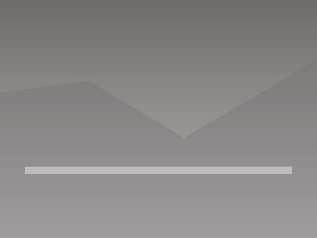
제1·2·3종 시설물별 정기안전점검·정밀안전점검·정밀안전진단 대상
건물 종류마다 다른 진단·점검 방법
건물은 용도와 구조 형식에 따라 안전진단과 점검 방법이 달라집니다. 주거용 건물은 사는 사람의 안전과 마감 품질에 집중하고, 상업·공업용 시설은 하중과 유지관리에 무게를 둡니다. 모든 건물에 같은 잣대를 대면 구조적 위험이나 기능 결함을 놓칠 수 있습니다. 온하임은 건물의 법적 용도와 실제 쓰임을 함께 분석해 종류마다 알맞은 정밀 점검과 진단을 합니다.
1. 아파트·오피스텔·다세대 같은 공동주택과 집합건물
공동주택과 집합건물은 입주민이 실제로 사는 전유부분의 상태와 공용 구조부가 오래 버틸 힘을 지키는 데 가장 큰 목적을 둡니다. 전유부분과 공용부분을 나눠 점검하되, 개별 세대보다 건물 자체의 문제에 초점을 맞춥니다.
- 지하주차장 구조체 균열과 벽 누수를 빠짐없이 조사합니다. - 옥상 우레탄 방수층이 벗겨지거나 들뜨거나 깨진 곳을 진단합니다. - 집집마다 세대 안 마감재와 설비에 하자가 없는지 살핍니다.
2. 상가 건물과 사무용 빌딩
상업·업무용 시설은 사람들이 안전하게 오갈 수 있는지, 잦은 인테리어 공사로 구조가 변형되지 않았는지 확인하고 설비가 얼마나 낡았는지 정밀하게 점검합니다.
- 많은 사람이 드나드는 공간이라 화재와 피난 안전을 먼저 검토합니다. - 용도 변경과 인테리어 공사가 잦아 비내력벽이 훼손되지 않았는지 조사합니다. - 지하 기계실·전기실이 물에 잠길 위험과 배관 설비 노후 정도를 점검합니다. - 외벽이 커튼월이라면 실란트가 낡았는지, 유리가 단단히 고정됐는지 진단합니다.
3. 공장과 물류창고, 산업단지형 업무 건물
생산과 물류 시설이 섞인 건물은 무거운 설비를 돌리는 만큼 바닥 구조가 튼튼한지를 집중적으로 분석합니다. 생산 설비와 쌓아 둔 짐의 무게가 되풀이해 실리기 때문에 바닥 구조의 건전성이 특히 중요합니다. 일반 건물보다 높게 잡은 설계 하중이 현장에서 제대로 유지되는지 3D 모델링 프로그램으로 검증합니다.
- 무거운 장비가 돌 때 하중이 적정한지, 진동이 어디로 전해지는지 진단합니다. - 설계 하중(kg/㎡)을 넘는 설비나 적재물이 없는지 프로그램으로 계산합니다. - 대형 화물 승강기와 하역장 주변 구조체가 부딪혀 깨지거나 변형되지 않았는지 봅니다. - 오가는 물량에 따라 바닥 마감이 닳은 정도와 평평한 정도를 잽니다.
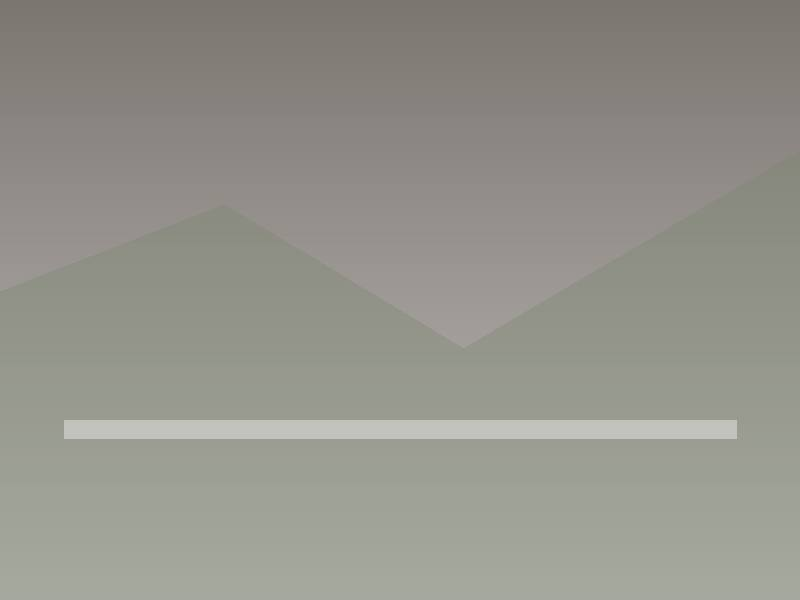
집합건물, 상업용 빌딩, 지식산업센터 — 대상마다 달라지는 안전진단 방식
정밀 측정 장비로 진행하는 건물 비파괴 검사 순서
비파괴 점검은 건물을 깨거나 뜯지 않고 속 상태를 확인하는 방법입니다. 설계도서를 미리 살펴보는 데서 시작해 장비 계측, 데이터 분석 순서로 진행하고, 단계마다 나온 결과를 모아 건물 상태를 최종 판단합니다.
설계도서와 현장 맞대어 보기
준공도면을 현장에 들고 가 주요 구조부의 위치와 부재 치수를 하나씩 맞춰 봅니다. 도면과 실제 시공이 같은지 확인하고, 이후 계측 결과를 해석하는 기준으로 씁니다. 공사 중 설계가 바뀌었는지도 이 단계에서 드러납니다.
콘크리트가 얼마나 단단한지 재기
슈미트 해머로 구조체 표면의 반발경도를 잽니다. 잰 값을 환산식에 넣어 설계 강도(MPa)와 실제 강도를 견줍니다. 구조체가 지금 어떤 상태인지 간접적으로 확인하고 강도가 떨어졌는지 판단하는 데 씁니다.
철근을 지키는 알칼리성이 얼마나 남았나
콘크리트에서 작은 시료(코어)를 떼어 낸 뒤 페놀프탈레인 용액을 뿌려 알칼리성이 어디까지 남아 있는지 봅니다. 이를 통해 철근이 녹슬 위험이 큰지, 구조물 내구성이 떨어졌는지 확인하고 보수가 필요한지를 판단합니다.
기울기 및 수직도 계측
토털스테이션으로 건물이 수직으로 얼마나 움직였는지, 지하주차장 슬래브가 얼마나 처졌는지를 잽니다. 지반이 내려앉거나 하중이 한쪽에 몰려 생긴 구조 변화를 mm 단위로 분석합니다.
열화상 카메라 분석
열화상 카메라로는 눈으로 볼 수 없는 누수 지점이나 단열재가 빠진 곳을 찾을 수 있습니다. 표면 온도 차이로 문제 지점을 가려내고, 결로가 생길 만한 곳이나 열이 새는 구간을 분석합니다.
초음파 및 내시경 탐사
초음파 장비와 내시경으로 배관 속 부식이나 천장 속처럼 사람이 직접 들여다보기 힘든 곳의 균열 상태를 진단합니다.
도막 및 피복 두께 측정
방수층이나 도장층이 시방서 기준만큼 두꺼운지 잽니다. 두께가 모자라면 방수 성능이 떨어질 수 있어 누수 위험을 판단하려고 측정합니다.
철근탐사 진행
철근 탐사 장비로 철근 위치와 간격, 피복 두께를 확인합니다. 설계 기준과 실제 시공 상태를 견주어 철근이 빠졌거나 피복이 모자란 곳이 없는지 판단합니다.
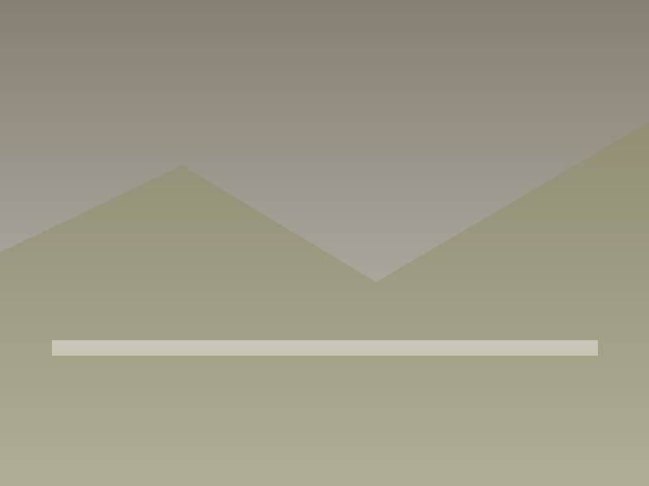
비파괴 검사에 쓰는 정밀 측정 장비와 진행 순서
진단 결과 보고서는 어떻게 구성되고 법적으로 어떻게 쓰일까
안전진단 보고서는 현장에서 잰 모든 데이터를 분석해 건물의 평가 등급을 정리한 문서입니다. 지금 상태를 적는 데서 그치지 않고, 결함이 생긴 원인과 보수·유지관리 방법까지 함께 담습니다.
기술적 근거로 신뢰를 얻는 보고서
보고서는 국토교통부가 고시한 시설물 안전점검 지침과 관련 법령의 표준 서식에 맞춰 씁니다. 건물 평가 등급은 객관적인 수치로 매기고, 진단 결과는 수치와 도면 자료를 바탕으로 정리해 주관적인 판단이 끼어들지 않게 합니다.
결함 위치도 작성
층마다 평면도에 균열, 누수, 박리처럼 찾은 하자의 자리를 표시합니다. 하자가 어느 구간에 몰려 있는지, 구조적으로 서로 이어져 있는지를 볼 수 있고, 건물 전체 하자를 한눈에 보며 보수 계획을 세우는 기준이 됩니다.
외관 조사 사진첩 만들기
외관 조사 사진첩은 찾은 결함 부위를 가까이와 멀리서 찍은 사진에 결함 내용을 함께 붙인 자료입니다. 사진과 설명이 나란히 있어 결함의 크기, 모양, 주변 환경을 한 번에 확인할 수 있습니다.
장비로 잰 값 모음
슈미트 해머 강도값, 철근 배근 간격, 수직도 계측값처럼 현장에서 직접 잰 데이터를 모은 자료입니다. 수치마다 설계 기준과 견줘 건물 상태를 객관적으로 판단할 수 있습니다.
안전등급 판정
기둥, 보, 슬래브 같은 구조체의 결함 점수를 더해 최종 등급(A~E)을 매깁니다. 결함을 하나하나 늘어놓는 대신 건물 자체가 얼마나 안전한지를 등급으로 정리합니다.
2. 하자 원인을 밝히고 유지관리 방법 제안
안전진단 보고서는 결함을 찾는 데서 그치지 않고 왜 생겼는지를 분석한 뒤, 건물 안전을 지키기 위한 보수 방법을 내놓습니다.
결함 원인 분석 소견
균열의 모양과 깊이를 분석해 종합적으로 검토하고, 시공 불량인지, 하중이 지나치게 실렸는지, 재료가 낡았는지 같은 원인을 짚어 냅니다.
알맞은 보수·보강 공법 제안
결함과 구조에 따라 보수·보강 방법이 달라집니다. 에폭시 주입, 탄소섬유 보강, 단면 복구처럼 결함 부위에 맞는 공법을 제안해, 공사비가 지나치게 들지 않으면서 효과는 높일 수 있게 돕습니다.
표준품셈으로 계산한 보수 비용
정부가 정한 표준품셈과 엔지니어링 기준을 적용해 계산합니다. 하자를 고치는 데 드는 비용을 객관적인 근거와 함께 예상 금액으로 보여 드립니다.
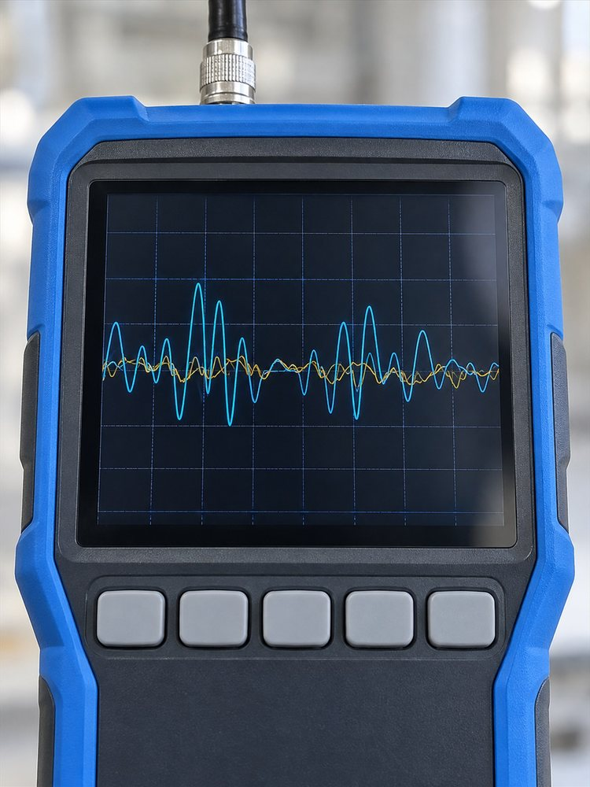
안전진단 보고서로 매기는 시설물 안전등급과 보수 비용
안전진단 전문기관 온하임의 기술력
건물 점검과 안전진단 실력은 법적 면허가 있는지, 현장에 나오는 기술 인력이 얼마나 숙련됐는지에 달려 있습니다. 온하임은 법에 따라 시설물 안전진단 전문기관으로 정식 등록한 기술 조직이며, 국가자격 기술자가 현장을 직접 진단합니다. 공공기관, 대형 건설사와 함께 일하며 검증받은 진단 서비스를 드립니다.
전문 기술 인력이 상주하는 시설물 안전진단팀
안전진단과 안전점검이 얼마나 정밀한지는 현장에 나가는 기술자의 등급과 전문성에 비례합니다. 온하임은 건축구조기술사부터 시공기술사, 안전기술사까지 숙련된 기술 인력이 상주하며 직접 진단합니다.
- 모든 점검을 본사가 직접: 외부 하도급이나 일용직을 쓰지 않고 본사 소속 기술 인력이 현장 조사를 맡습니다. - 법적 효력 있는 보고서: 시설물안전법에 따라 등록한 진단기관이자 구조 엔지니어링 면허를 가진 회사라, 그대로 제출할 수 있는 결과 보고서를 발행합니다. - 꾸준한 기술 발전: 내부 전문가들이 직접 수행한 진단 데이터를 분석해 기술력을 계속 다듬고 있습니다.
2. 공공기관·대형 건설사와 함께한 수행 실적
온하임의 진단 실력은 기준이 까다로운 지자체·공공기관과 대형 건설사와 함께 해 온 실적으로 증명됩니다. 이들과 손잡고 여러 종류의 시설물 점검을 맡아 왔습니다.
- 지자체·공공기관 업무: 여러 지자체에 안전진단 수행기관으로 등록돼 있고, 공공기관 시설물 점검 용역을 무사히 마치며 신뢰를 쌓았습니다. - 건설사 품질점검: 이름 있는 시공사들과 손잡고 공사 중부터 준공 뒤 관리까지 정밀한 품질 확인을 도맡아 실력을 인정받았습니다. - 전국 규모 용역: 아파트, 오피스 빌딩, 산업 시설 등 전국 곳곳의 시설물 점검을 동시에 진행할 수 있는 인력과 장비를 갖췄습니다. 큰 프로젝트에서도 일정과 품질을 지킬 수 있게 조직을 꾸려 운영합니다.
3. 쌓아 온 진단 데이터를 바탕으로 한 진단 시스템
안전진단 시장은 아직 손으로 기록하는 방식에 머문 곳이 많지만, 온하임은 직접 만든 현장기록 도구로 점검 뒤 보고서를 쓰는 시간을 크게 줄였습니다. 그동안 여러 건물에서 쌓은 점검 데이터는 건물 종류마다 숨은 결함을 미리 짐작하고 원인을 정확히 밝히는 데 쓰이는 가장 중요한 자산입니다.
- 데이터로 하는 정밀 진단: 점검 데이터를 분석해 건물 종류별, 시공사별로 되풀이되는 결함 유형을 예상합니다. 덕분에 첫 점검 단계부터 위험 요소를 짚어 낼 수 있습니다. - 건물 생애주기 관리: 사전점검 데이터와 안전진단 데이터를 이어 건물이 낡는 속도와 보수 시기를 예측합니다. 한 번의 점검을 넘어 오래 두고 자산을 관리할 수 있습니다. - 장비 기준 통일: 교정을 마친 최신 비파괴 장비를 넉넉히 갖춰 측정 오차를 줄입니다. - 고객별 기술 지원: 점검 뒤 시공사와 기술 협의를 하거나 법적으로 대응할 때 전문 기술 인력이 곁에서 돕습니다.
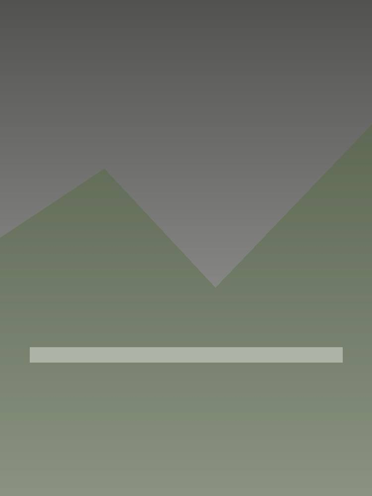
공공기관 안전진단 실적으로 검증받은 안전진단전문기관 온하임
구조안전확인서란 무엇이고 왜 필요할까
건물이 안전한지는 눈에 보이는 균열이 있느냐 없느냐로 판단할 수 없습니다. 구조안전확인서는 건물이 견뎌야 할 여러 하중을 구조체가 버틸 수 있다는 것을 증명하는 문서로, 예상하지 못한 하중이 실려도 견딜 수 있는지 확인할 수 있습니다.
1. 구조안전확인서, 어떤 서류일까?
구조안전확인서는 건물 구조체가 바깥에서 받는 힘을 버틸 수 있도록 설계·시공됐다는 것을 보증하는 서류입니다. 설계자(6층 이상 등 일정 규모를 넘으면 건축구조기술사가 협력)가 설계도면과 현장 조건을 기준으로 구조 계산을 하고, 문제가 없을 때 날인합니다.
건물이 하중을 버틸 수 있음을 증명하는 법적 서류
건물은 제 무게(고정하중), 사람과 가구의 무게(활하중), 바람(풍하중), 지진(지진하중)처럼 쉬지 않고 바깥 힘을 받습니다. 구조안전확인서는 이런 힘이 실렸을 때 기둥, 보, 슬래브 같은 부재가 부서지지 않고 버틸 수 있다는 것을 구조기술사가 계산으로 증명한 결과물입니다.
건축주가 구조안전확인을 꼭 받아야 하는 이유
건축주는 건물 안전에 책임이 있습니다. 특히 증축이나 용도변경처럼 기존 구조 계획이 바뀔 때 구조 안전을 확인하지 않고 공사하면 건물이 무너질 위험을 안게 됩니다. 구조안전확인은 사고를 막는 꼭 필요한 절차입니다.
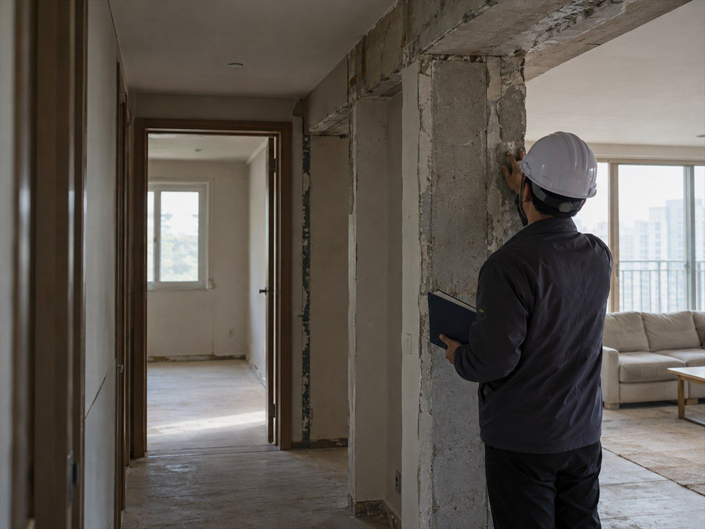
증축·용도변경 때 구조안전확인서가 필요한 이유
언제 구조 검토를 받아야 할까 — 경우별 사례
구조안전확인서와 구조안전진단은 건물이 서 있는 내내 여러 시점과 상황에서 필요합니다. 그럼 언제 필요할까요? 새로 지을 때만이 아니라 쓰임이 바뀌거나 실리는 무게가 달라질 때마다 구조 검토가 필요합니다. 아래에서 어떤 상황에 필요한지 하나씩 설명드리겠습니다.
1. 건물을 증축할 때
남은 용적률을 쓰거나 용적률이 올라 증축할 때는 구조안전확인서를 꼭 받아야 합니다. 층 하나 더 올리는 것뿐이라고 생각하기 쉽지만, 아래 구조가 그 무게를 감당하지 못할 수 있습니다. 구조 검토 없이 증축하면 완공 뒤 사용이 제한되거나 보강 공사를 해야 할 수 있습니다.
수직 증축과 필로티 건물에서 따로 확인할 것
1층은 기둥만 있고 위층에 벽이 많은 필로티 구조는 지진이 나면 1층 기둥에 힘이 몰려 한 층이 통째로 주저앉는 연약층 붕괴 위험이 큽니다. 탁 트여 보여도 구조적으로는 약할 수 있습니다. 수직 증축은 아래 기초와 기둥에 예상하지 못한 무게를 더하므로, 기존 골조에 그만큼 버틸 여력이 남아 있는지 확인해야 합니다.
2. 건물 용도를 바꿀 때
건물 쓰임을 바꿀 때는 구조안전확인서가 필요한 경우가 많습니다. 주택으로 쓰던 건물을 음식점으로 고치는 경우가 대표적입니다. 드나드는 사람 수와 설비 무게가 바뀌면 구조 조건도 함께 달라지기 때문에 구조 검토를 받아야 합니다.
외국인 대상 도시민박 신고 전에 받는 안전 확인
낡은 건물로 외도민(외국인관광 도시민박업)이나 공유숙박 등록을 신고할 때, 지자체에 따라 단독주택이나 다세대주택 구조안전확인서를 내라고 하기도 합니다. 숙박시설은 여러 사람이 머무는 건물이라 지자체가 안전한지 확인하려고 요구하는 것입니다.
근린생활시설·운동시설 등으로 업종을 바꿀 때의 구조안전진단
일반 사무실을 헬스장이나 필라테스 센터로 바꾸면 바닥 슬래브가 견뎌야 할 무게가 2배 가까이 늘어납니다. 무거운 운동기구와 여러 사람이 한꺼번에 움직이기 때문입니다. 구조 검토 없이 기구를 들이고 사람을 받으면 하중이 커져 바닥이 처지거나 금이 갈 수 있습니다. 용도변경 인허가를 받기 전에 하중이 적정한지부터 검토해야 합니다.
3. 뼈대를 손보는 리모델링·대수선 공사
기존 건물의 뼈대에 손을 대는 일은 모두 구조적 위험을 안고 있습니다. 오래된 건물일수록 구조 상태가 처음 지었을 때와 달라진 경우가 많아서, 구조안전진단을 거쳐 구조안전확인서를 받아야 리모델링이나 대수선을 할 수 있습니다.
내력벽 철거·보강, 개구부 내기처럼 골조를 바꿀 때 거치는 절차
공간을 넓히려고 내력벽 일부를 헐거나 문(개구부)을 내면, 그 벽이 받던 무게가 옆 기둥이나 보로 옮겨 갑니다. 옮겨 간 무게가 골조에 무리를 주지 않는지 분석해야 하고, 필요하면 철골 프레임 보강 같은 설계를 함께 해야 합니다.
4. 특수 설비를 들이거나 하중이 바뀔 때의 구조안전확인서
무게가 한곳에 몰리면 건물에 생각보다 큰 영향을 줍니다. 그래서 건물 안팎에 무거운 장비를 올리거나 설치할 때도 구조 검토를 거쳐 구조안전확인서를 받아 두어야 합니다.
옥상 태양광 패널 설치 때 받는 구조안전확인서
요즘 옥상 태양광을 다는 곳이 늘고 있는데, 패널 무게뿐 아니라 바람이 밀고 당기는 힘(풍압)이 옥상 슬래브에 주는 충격도 큽니다. 옥상층은 보통 하중 기준을 낮게 잡아 설계하므로, 설비를 더 올릴 때는 구조 안전을 꼭 확인해야 합니다.
전산실 서버 랙, 공장 대형 장비처럼 무게가 한곳에 몰리는 경우
좁은 구역에 무거운 서버 랙이나 기계 장비가 몰리면 집중하중이 생깁니다. 바닥 전체에 고르게 퍼지는 하중보다 부재에 훨씬 큰 부담을 주기 때문에, 전산실을 꾸미거나 공장 라인을 늘릴 때는 구조 점검을 꼭 받아야 합니다.
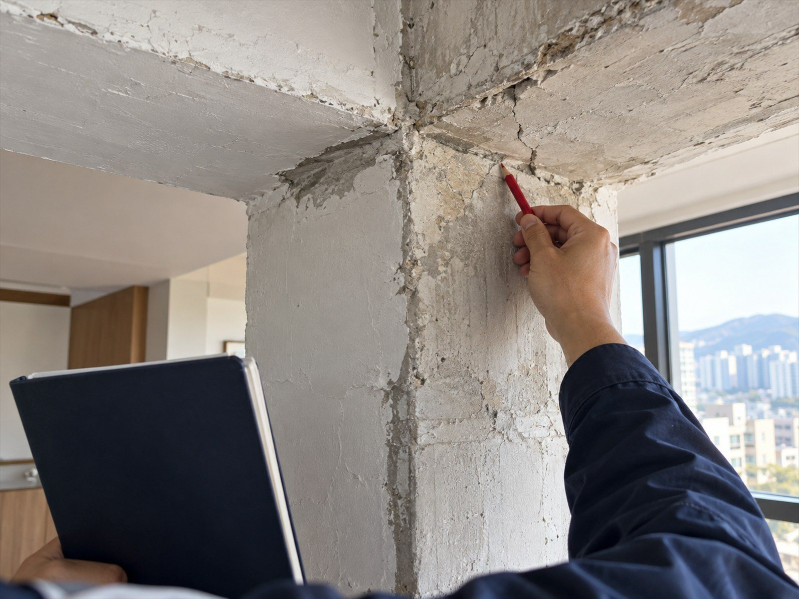
외도민 등록, 리모델링, 태양광 설치 때 꼭 거치는 구조안전검토
구조안전진단·확인서 없이 공사했을 때 받는 행정처분 위험
구조안전진단을 거쳐 확인서를 받지 않고 공사나 용도변경을 하면 건축주는 큰 경제적·법적 손실을 볼 수 있습니다. 공사가 끝난 뒤 문제가 드러나면 행정처분부터 재산권 제한까지 이어질 수 있으니, 진단과 확인서는 꼭 챙겨야 합니다.
행정 제재와 재산권 제한
구조안전확인 절차가 빠져 있으면 지자체는 강한 행정 조치를 내릴 수 있습니다. 행정기관은 공사의 의도나 규모보다 절차를 지켰는지를 기준으로 판단합니다. 실제로 구조 검토 없이 진행한 공사가 인허가 단계에서 멈춘 사례도 있습니다.
인허가 반려로 사업이 늦어지고 위반건축물로 올라갈 위험
구조안전확인서가 빠지면 증축이나 용도변경 허가가 나지 않습니다. 허가 없이 밀어붙이면 위반건축물로 올라가 해마다 이행강제금을 물 수 있습니다.
위반건축물이 되면 매매와 담보 대출이 막힙니다
위반 사항이 있는 건물은 건축물대장에 위반건축물로 적힙니다. 그러면 정상적인 매매가 어렵고, 사려던 사람이 이를 이유로 계약을 물릴 수 있으며, 금융기관은 담보 가치를 낮게 매깁니다
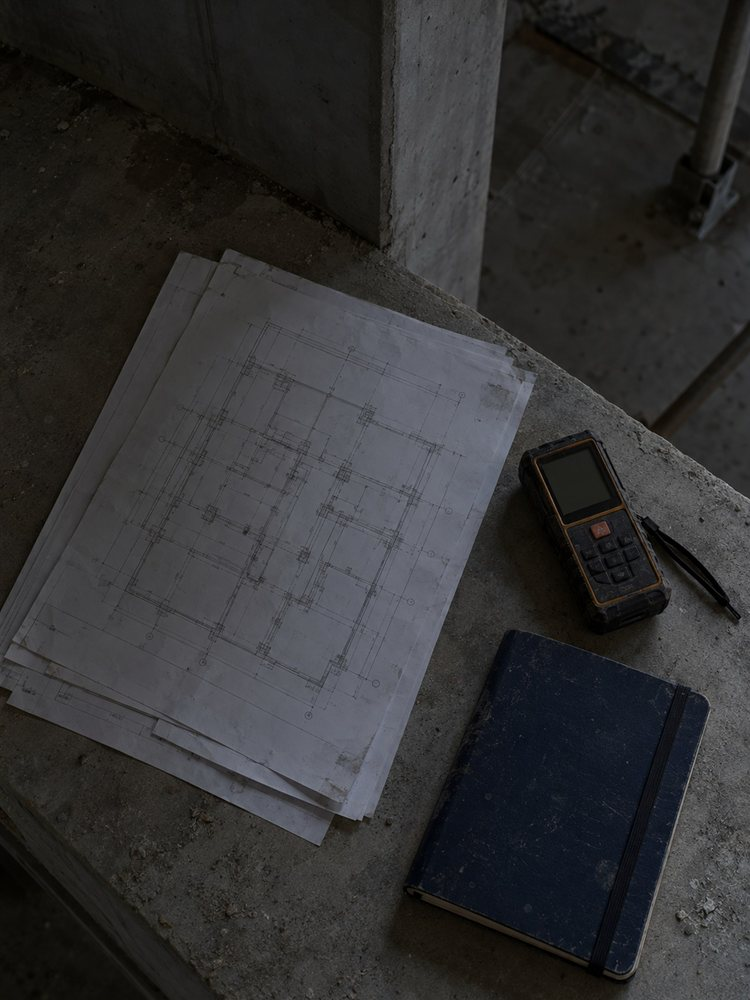
구조안전진단을 건너뛰었을 때 생기는 법적 문제와 인허가 반려 사례
구조안전확인서를 받기 위한 구조안전진단 순서
구조안전확인서를 내려면 먼저 건물의 지금 상태를 정확히 알아야 합니다. 온하임은 비파괴 장비와 전문 기술 인력을 현장에 보내 건물 상태를 정밀하게 파악하고 진단합니다.
철근 탐사기로 속 철근 배근(간격·지름) 전수 조사
콘크리트 속에 묻힌 철근의 개수와 간격이 건물의 힘을 좌우합니다. 철근 탐사기로 건물을 깨지 않고 철근이 도면대로 들어갔는지, 낡은 건물이라면 철근이 얼마나 모자란지를 정밀하게 확인합니다.
콘크리트 강도 측정(슈미트 해머)과 도면 되살리기
콘크리트 강도는 세월이 지나며 달라집니다. 슈미트 해머로 반발경도를 재서 콘크리트가 설계도면만큼의 강도를 지키고 있는지 확인합니다. 도면이 없거나 불완전하면 이렇게 모은 조사 데이터로 구조 도면을 다시 그릴 수 있습니다.
얼마나 기울고 얼마나 낡았는지 재기
정밀 장비로 건물 전체가 얼마나 기울었는지, 일부만 내려앉는 부동침하가 있는지 확인합니다. 기준 이상 기울었거나 부동침하가 발견되면 구조 안전성 판정에 큰 영향을 줍니다.
구조 균열을 분석해 손상 지도 그리기
벽에 생긴 균열이 단순한 도장 균열인지, 구조에서 생겨 계속 커지는 균열인지 가려냅니다. 이를 손상 지도로 남겨 나중에 균열이 더 심해지는지 확인하고, 건물에 변화가 있었는지 판단하는 기준으로 씁니다.
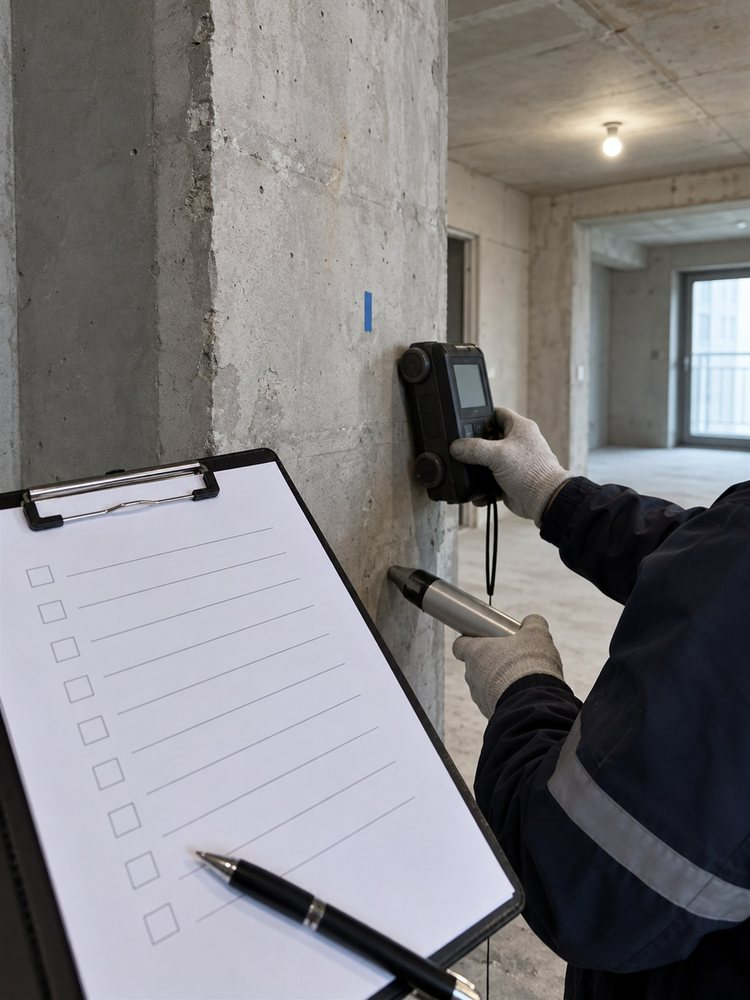
콘크리트 강도와 철근 탐사를 바탕으로 한 구조안전진단
온하임의 구조안전확인서 발급·구조안전진단이 다른 점
구조안전확인서는 서류를 내는 것만으로 끝나지 않습니다. 법적 자격을 갖춘 전문기관이 진단하고 그 내용을 책임질 수 있느냐가 중요합니다. 온하임은 정식 구조 안전진단 면허를 바탕으로 빠르고 정확하게 용역을 수행하는 엔지니어링 회사입니다.
구조기술사를 비롯한 진단 인력이 늘 대기
온하임은 하도급을 주지 않습니다. 본사 기술 인력이 장비를 들고 현장에 나가 진단·측정하고, 본사 구조팀이 이를 해석합니다. 모든 과정을 직접 하기 때문에 전달 과정에서 생기는 실수가 없고 일 처리도 빠르고 정확합니다.
지자체 보완 요청에 바로 대응하고 빠르게 안내
지자체 검토 중에 보완 요청이나 추가 요구가 나올 수 있습니다. 온하임은 서류를 넘기고 끝내지 않고, 승인이 날 때까지 생기는 모든 변수에 함께 대응합니다.
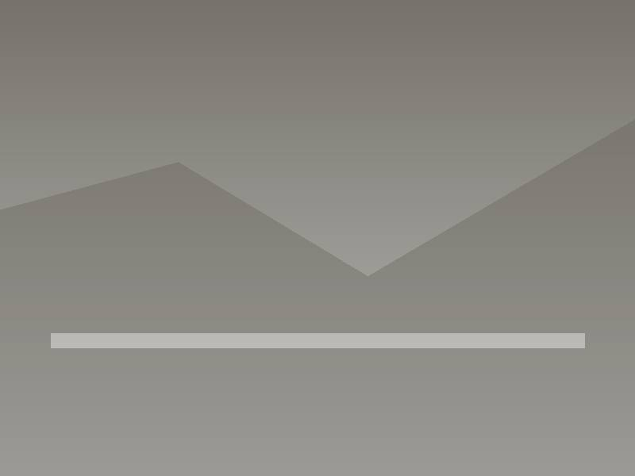
구조안전진단부터 확인서 발급까지 맡는 전문기관 온하임
건물 구조체 내진설계와 비구조요소 내진설계, 무엇이 다를까
건물 내진설계는 구조체 부분과 비구조요소 부분으로 나뉩니다. 구조체 내진설계는 바깥 힘에 기둥, 슬래브, 보 등이 무너지지 않게 하려는 것이고, 비구조요소 내진설계는 충격이 왔을 때 건물 안에 붙어 있는 것들(비구조요소)이 떨어지거나 부서지지 않게 하려는 설계입니다.
1. 뼈대를 지키는 구조체 내진설계
구조체 내진설계는 지진이 나거나 바깥에서 힘이 전해질 때 건물의 뼈대인 주요 구조부가 버티게 해 건물이 무너지지 않도록 하는 설계입니다. 기둥, 보, 바닥 슬래브처럼 하중을 직접 전달하는 구조체가 여기에 들어갑니다. 지진이 나면 얼마나 꿋꿋이 버티느냐보다 힘을 어떻게 나눠 받느냐가 중요합니다. 힘이 한곳으로 몰리면 무너질 수 있으니, 건물에 실리는 힘을 전체로 고르게 흩어 받도록 설계해야 합니다.
기둥·보·슬래브 같은 주 구조체가 무너지지 않는 원리
평소 건물은 위에서 누르는 무게를 버티는 데 맞춰 설계되지만, 지진이 나면 옆에서 강한 수평력을 받습니다. 구조 내진설계는 전단벽이나 모멘트 골조로 이 횡력을 땅으로 안전하게 흘려보내게 합니다. 지진 뒤에도 고쳐서 쓸 수 있을 만큼, 적어도 안에 있는 사람이 모두 대피할 때까지는 건물이 버티게 하는 것이 목표입니다.
2. 설비·외장재 내진설계
비구조요소 내진설계는 주요 구조부를 뺀 나머지 요소들이 흔들림에 떨어지거나 부서져 생기는 2차 피해를 막는 설계입니다. 요즘 대형 병원 같은 건물은 스프링클러부터 조명까지 비구조요소 내진설계를 거쳐 안전을 챙기고 있습니다.
설비·마감재 같은 부속 요소가 떨어지지 않게 하는 원리
구조체가 멀쩡해도 천장 조명이 떨어지거나 외벽 석재가 떨어져 나가면 큰 사고로 이어집니다. 비구조요소 내진설계는 이런 부속물이 지진의 흔들림에도 골조에 단단히 붙어 있도록 전용 앵커와 버팀대를 설계하는 일입니다. 특히 소방 배관이나 비상발전기 같은 설비는 지진 뒤 불을 끄고 구조 활동을 하려면 반드시 작동해야 해서 더 엄격하게 설계합니다.
두 가지 내진설계, 무엇을 지키고 어디에 적용하나
건축·기계·전기, 분야마다 챙길 비구조요소
비구조요소 내진설계는 크게 건축 부문과 기계·전기 부문으로 나뉩니다. 부문마다 하중 성격과 설치 방식이 달라 한 기준으로 판단하기 어렵습니다. 건축 마감은 떨어질 위험이, 기계·전기 설비는 작동을 멈출 위험이 가장 큰 문제입니다. 설계 범위는 부재 무게와 설치 위치로 정해지므로 항목별 분류를 정확히 알아 두어야 합니다.
1. 건축 비구조요소 (마감과 실내 요소)
건축 비구조요소는 건물 겉모습을 이루거나 실내 공간을 나누는 요소로, 지진 때 떨어져 사람을 다치게 할 가능성이 큰 항목입니다.
외장재 : 대리석 같은 석재 마감, 커튼월, 바깥 치장벽돌, 금속 패널, 유리
내장재 : 매달린 천장재(높은 천장), 조명 받침대, 흡음재
벽체 : 높이 1.8m 이상이거나 천장재에 이어진 칸막이벽, 땅에 세운 높이 2.0m 이상 담장·울타리
기타 : 옥상 난간벽(파라펫), 바깥 차양(캔틸레버), 고정식 서가와 수납장
2. 기계·전기 비구조요소 (기반·방재 설비)
지진 뒤에도 건물이 제 기능을 하고 화재나 침수 같은 2차 피해를 막는 데 꼭 필요한 설비입니다. 소방, 기계, 전기, 반송 설비로 나뉘며, 내진설계가 필요한 항목은 아래와 같습니다.
소방 : 제연 팬과 소방 펌프, 소화전, 내진 물탱크, 스프링클러 배관
기계 : 급수 탱크·보일러·공조기(AHU), 가스 배관, 옥상 냉각탑
전기 : 비상발전기와 축전지함, 변압기, 제어반, 배전반(MCC)
반송 : 승강기 레일과 구동기, 에스컬레이터를 받치는 부분
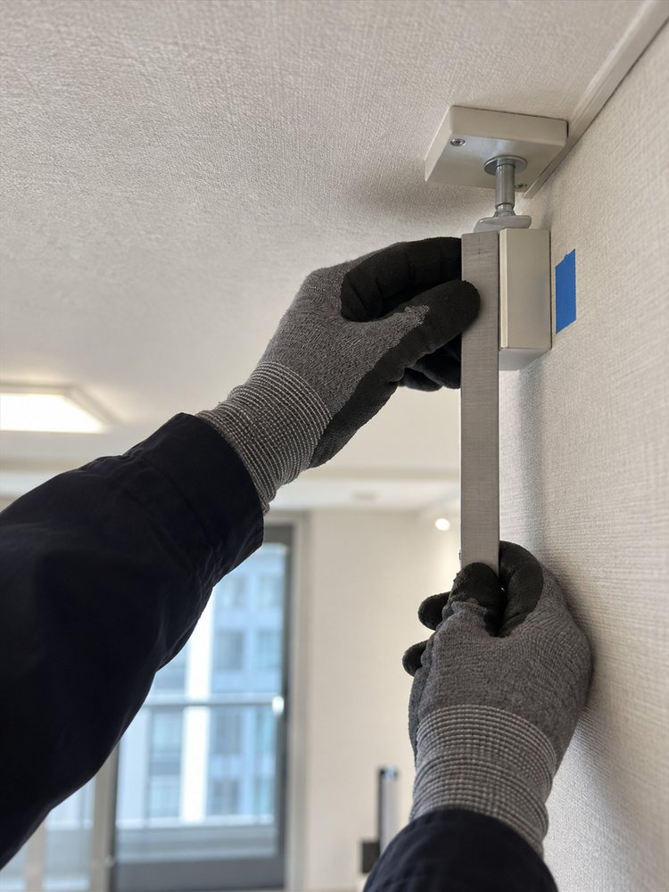
지진에 떨어지거나 멈추지 않게 하는 비구조요소 내진설계
비구조요소 내진성능은 어떻게 검토할까
비구조요소가 안전한지는 눈으로 보고 판단하는 게 아니라, 그 부재가 받을 지진력을 계산하고 버틸 수 있는지 수치로 증명하는 구조 엔지니어링 과정입니다. 지진이 났을 때 설비나 마감재가 떨어져 나갈 가능성이 있는지 확인하려고 진행합니다.
1. 비구조요소 설계 지진력, 어떻게 계산할까
비구조요소가 받는 지진하중은 건물 높이에 따라 커지고, 위층으로 갈수록 흔들림이 더 커집니다. 지진 때 건물이 시계추처럼 흔들리기 때문에 1층보다 옥상에 놓인 설비가 훨씬 크게 흔들립니다.
설치 위치와 자체 무게를 따져 계산하는 방식
설계 지진력은 부재 무게에 가속도 계수를 곱해 구합니다. 여기에 건물 높이별 증폭 계수와 비구조요소 자체의 유연성을 반영한 증폭 계수가 더해집니다. 그래서 무거운 장비가 위층에 놓일수록 설계 지진력이 커지고, 고정 장치도 그만큼 튼튼하게 설계해야 합니다.
흔들림의 크기를 어떻게 숫자로 잡을까
전문성과 믿음을 함께 갖춘 온하임 구조 안전 서비스
구조검토와 내진설계는 건물 속 사람의 생명과 바로 이어지는 일이라, 자문만 하는 업체가 아니라 법적 면허를 가진 전문기관을 고르는 게 가장 중요합니다.
1. 정식 면허로 갖춘 법적 신뢰
온하임은 나라에서 인정한 구조 안전 분야 정식 면허를 갖고 있습니다. 판단 과정과 결과에 대한 책임을 분명히 하려고 내부 기술 기준에 따라 관리하며, 외부에 다시 맡기지 않습니다. 검토하는 쪽과 책임지는 쪽이 같아서 검토 이력을 믿고 관리할 수 있습니다.
건축구조기술사 날인으로 법적 효력까지
온하임은 외부 하청 없이 본사가 직접 운영하며, 기술사가 직접 검토하고 날인한 보고서를 냅니다. 6층 이상 건물을 비롯해 법으로 정한 건물은 구조 서류에 건축구조기술사 확인이 꼭 있어야 합니다. 이 보고서를 갖춰 두면 행정 보완 요청이 오거나 법적 다툼이 생겼을 때 건축주가 대응하기 수월합니다.
현장 실측부터 해석까지 한 번에
서류만 대신 써 주는 업체가 많지만, 온하임은 필요하면 현장에 직접 가서 골조 상태, 앵커를 박을 수 있는지, 배관이 걸리지 않는지 등을 잽니다. 정확한 현장 데이터로 설계하면 시공 때 오차가 줄고, 쓸데없는 재시공 비용도 아낄 수 있습니다.
2. 인허가 일정에 맞춘 빠른 현장 투입과 행정 지원
인허가가 늦어지는 만큼 공사비가 늘어나니, 건축주에게 시간은 곧 돈입니다. 온하임은 행정 처리가 늦어지지 않도록 접수부터 검토까지 군더더기 없는 순서로 진행합니다.
지자체·소방서가 보완을 요구하면 곧바로 회신
인허가 검토 중에 담당 공무원이 구조 계산 방식이나 적용 기준을 두고 보완을 요청할 때가 있습니다. 온하임은 요청이 오면 바로 기술 내용을 다시 확인하고, 추가 계산과 보고서 발행을 돕습니다. 인허가 실무를 많이 겪어 봐서 공무원이 무엇을 확인하려는지 정확히 짚어 내고, 승인이 늦어질 일을 줄입니다.
현장에서 실제로 지을 수 있는 설계
안전 기준을 채워도 현장에서 시공할 수 없다면 쓸모가 없습니다. 계산상으로만 안전한 설계가 아니라 작업자가 실제로 설치할 수 있는지를 먼저 따집니다. 지나친 보강이나 복잡한 공법 대신, 법은 지키면서 비용과 공사 기간을 줄일 수 있는 내진 공법을 제안합니다.
구조기술사가 처음부터 함께하는 내진 평가·설계
1 내진성능평가란 무엇이고 누가 받아야 할까
내진성능평가는 지진이 났을 때 건물이 안전하게 버틸 수 있는지를 공학적으로 따져 보는 절차입니다. 「지진·화산재해대책법」, 「시설물안전법」, 「건축물관리법」에 따라 진행하며, 건물이 무너지는 것을 막고 사람을 지키는 것이 목적입니다.
1. 법이 정한 내진성능평가 대상과 지정 기준
어떤 건물이 내진성능평가를 받아야 하는지는 건물 용도와 위험도로 정해집니다. 특히 재난이 났을 때도 제 기능을 해야 하는 시설은 반드시 관리해야 합니다.
「지진화산재해대책법」
지진·화산재해대책법 제16조에 따라 공공시설물은 기존 시설물 내진보강 기본계획에 맞춰 내진성능평가와 보강을 진행합니다. 재난이 났을 때 공공 기능이 멈추지 않게 하려는 조치입니다.
「시설물안전법」
시설물안전법은 정밀안전진단을 받는 시설물 가운데 내진설계 대상인데 아직 내진성능평가를 받지 않은 곳이라면, 정밀안전진단 때 내진성능평가를 함께 하도록 정하고 있습니다.
병원, 학교, 공공청사, 노인·어린이 시설
재난 때 거점이 되는 시설은 내진성능평가와 보강을 먼저 받아야 합니다. 지진이 나도 곧바로 제 기능을 해야 하기 때문입니다. 그 밖의 민간 건물은 의무는 아니지만, 내진설계가 안 된 건물을 보강하면 세금 감면 같은 지원을 받을 수 있습니다.
2. 일반 안전점검·안전진단과 내진성능평가는 무엇이 다를까
일반 안전점검은 건물이 얼마나 낡았는지, 균열이나 부식 같은 지금의 물리적 결함을 확인하는 과정입니다. 내진성능평가는 지진이 났을 때 구조물이 버틸 수 있는지를 평가하고 분석합니다. 안전진단은 보통 늘 실려 있는 하중(고정하중, 활하중)에 대한 안전을 보지만, 내진성능평가는 흔들리는 하중(지진하중)에 건물이 어떻게 반응하는지를 분석합니다.
3. 내진설계 없이 지은 오래된 건물, 법은 어디까지 요구할까
1988년 내진설계가 의무가 되기 전에 지은 건물은 지진하중을 고려하지 않고 설계돼 잠재 위험 건물로 봅니다. 법적 의무 대상이 아니어도 행정 권고를 받으면 내진성능평가나 보강을 하기도 합니다.
내진설계는 언제부터 의무였고 기준은 어떻게 바뀌었나
1988년 건축법이 바뀌면서 6층 이상이거나 연면적 10만㎡ 이상인 건물에 처음으로 내진설계가 의무가 됐습니다.
지진 위험이 커지면서 대상이 계속 넓어져, 2005년에는 3층 이상, 2017년부터는 2층 이상이거나 연면적 200㎡ 이상인 건물 전체로 확대됐습니다.
공공·민간 건물 내진보강, 정부 지침은?
정부는 기존 시설물 내진보강 기본계획에 따라 국가·지자체 소유 건물, 학교, 병원 등이 차례로 내진성능평가를 받고 보강하도록 정하고 있습니다. 민간 건물은 의무가 아니지만, 내진설계가 안 된 기존 건물을 스스로 보강하면 취득세·재산세 감면 같은 혜택을 받을 수 있습니다.
리모델링, 증축, 용도변경을 할 때는 구조 안전을 확인해야 하고, 내진성능평가에서 힘이 모자라다고 나오면 보강부터 해야 합니다.
비용이 부담된다면 지자체마다 하는 민간 건축물 내진보강 지원 사업을 찾아보세요. 평가비나 보강비 일부를 지원받을 수 있는지 확인할 수 있습니다.
세 가지 법으로 본 내진성능평가 대상 정리
2 내진성능평가는 어떻게 진행되고 무엇을 조사할까
내진성능평가는 지진이 왔을 때 건물이 버틸 수 있는지 상태를 평가하는 과정입니다. 평가하려면 구조도면이 꼭 있어야 하고, 도면이 없다면 현장에서 도면을 만드는 작업부터 해야 합니다. 이렇게 모은 데이터는 구조 해석 모델을 만드는 데 꼭 필요합니다.
기존 설계도서를 꼼꼼히 분석하고 구조 방식 가리기
건축물대장과 구할 수 있는 준공도면을 모두 분석해 건물 뼈대를 이루는 구조 도면을 골라냅니다. 기둥과 보가 무게를 받치는 라멘 구조인지, 벽이 직접 무게를 받는 벽식 구조인지 건물의 구조 형태를 정합니다. 도면에 적힌 주요 부재의 규격과 설계 당시 적용한 하중도 먼저 확인합니다.
도면 없는 건물은 현장에서 재고 도면을 되살립니다
도면이 없는 오래된 건물이라면 건축 전문가가 현장에 가서 건물 전체의 평면도와 구조도를 새로 그립니다. 레이저 레벨기와 거리 측정기로 기둥 사이 간격, 층 높이, 보 크기 등을 mm 단위로 정밀하게 잽니다. 이렇게 되살린 도면은 컴퓨터 구조 해석 모델의 뼈대가 되어 결과 오차를 줄여 줍니다.
힘이 몰리는 부재의 크기와 자리 재기
지진 때 힘이 몰리는 기둥, 보, 내력벽의 위치와 단면 치수를 빠짐없이 조사합니다. 실제 시공에서 생겼을 오차를 확인하려고 설계값과 실측값을 맞대어 분석합니다.
비파괴 검사로 강도를 재고 구조 부재 상태 조사
구조 해석을 믿을 수 있으려면 설계도서의 숫자가 아니라 실제로 시공된 재료의 상태를 정밀하게 알아야 합니다. 비파괴 검사로 해석 모델의 바탕이 될 실측 데이터를 얻습니다.
슈미트 해머로 콘크리트 압축강도 재기
층마다 주요 기둥과 보에 디지털 슈미트 해머를 대고 반발경도 시험을 합니다.
잰 반발경도 값을 환산해 실제 콘크리트 압축강도(MPa)를 구합니다.
설계 강도와 실제 강도가 얼마나 차이 나는지 보고 지진하중을 견딜 힘을 계산합니다.
속에 묻힌 철근 간격·개수 확인
콘크리트 속을 들여다보는 철근 탐사기로 안쪽 철근 간격과 상태를 파악합니다.
속 철근의 위치, 지름, 간격, 개수를 mm 단위로 재서 도면과 같은지 확인합니다.
철근을 덮고 있는 '피복 두께'를 빠짐없이 재서 구조 성능이 떨어질 가능성을 분석합니다.
내진성능평가 진행 과정과 구조 해석 모델 만들기
3D 모델로 구조 안전성과 성능 해석
현장 조사에서 모은 데이터를 3D 구조 해석 프로그램에 넣어 모델을 만듭니다. 이 단계에서 계산상의 지진력을 건물 모델에 걸어 보고, 실제로 무너질 위험과 부재마다 남은 힘을 자세히 확인합니다.
선형·비선형 해석을 함께 돌리는 분석
건물 특성과 하중 조건에 맞춰 선형 해석과 비선형 해석을 함께 합니다. 현장 계측값과 지반 특성을 바탕으로 3D 모델을 만들어 건물 특성을 파악하고, 하중 크기와 해석 방법에 따라 여러 각도로 분석합니다.
지진을 걸어 보는 3D 건물 모델
내진 성능을 높이는 알맞은 구조 보강 공법
내진성능평가 결과가 목표에 못 미치면 건물 구조 특성에 맞춘 보강 설계를 해야 합니다. 온하임은 구조 해석 데이터를 바탕으로 힘이 몰리는 약한 곳만 골라 보강 설계안을 세웁니다. 지나친 설계는 빼고, 시공하기 쉽고 비용도 아끼는 보강 방법을 설계합니다.
1. 구조 해석을 바탕으로 부재마다 맞춘 보강 설계
구조 해석 데이터로 힘이 몰리는 약한 부분을 찾습니다. 건물 전체를 보강하지 않고 필요한 곳만 골라 보강 설계안을 세웁니다.
시스템 강성 보강 설계
지진 때 건물이 지나치게 흔들리지 않도록 뼈대 전체를 튼튼하게 보태 옆으로 버티는 힘을 키우는 설계입니다.
전단벽 증설 설계
구조 해석에서 옆으로 버티는 힘이 모자란 구간에 철근콘크리트 벽을 더해, 건물 전체의 강성을 높이는 설계를 제안합니다.
강재 프레임 설계
시공하기 쉽도록 건물 안팎 벽에 철골 브레이싱을 다는 도면을 그리고, 이음부 상세를 정밀하게 설계합니다.
내진 성능을 끌어올리는 맞춤 구조 보강 설계
온하임 내진성능평가의 기술력
내진성능평가는 조사에서 끝나지 않고 조사 데이터를 분석하는 과정까지 포함된 전문 엔지니어링 서비스입니다. 온하임은 건축구조기술사와 함께 빠르게 점검하고, 고객의 목적에 맞는 내진성능평가를 진행합니다.
구조 안전 면허로 갖춘 신뢰와 빠른 대응
온하임은 안전진단 전문기관이자 구조 엔지니어링 면허를 가진 회사입니다. 구조기술사가 상주하고 있어 내진성능평가를 맡을 자격을 갖췄습니다.
기한을 지키는 빠른 현장 투입과 점검
현장 조사 시작부터 보고서 작성까지 걸리는 시간을 줄이고, 용역 기간에 맞춰 기술 인력을 더 투입해 과태료 같은 행정상 불이익을 막습니다.
목적에 따라 내용을 맞춘 보고서
법적 의무를 채우는 표준 보고서부터 발주처가 원하는 내용을 담은 맞춤 진단까지 제공합니다.
보수·보강을 결정할 때 참고할 실무 안내 포함
평가 결과 보강이 필요하면 지나친 설계는 빼고 알맞은 보강 방향과 예상 비용을 안내합니다. 평가가 끝난 뒤에도 기술적으로 궁금한 점이 있으면 담당자가 빠르게 상담해 드립니다.
내진성능평가·내진설계 전문기관 온하임
아파트 사전점검 자주 묻는 질문
아파트 사전점검은 입주 전에 꼭 거쳐야 하는 절차지만, 처음 새 아파트에 들어가는 분께는 낯설 수 있습니다. 실제로 온하임 상담에서도 언제 점검해야 하는지, 업체마다 전문성이 어떻게 다른지, 하자는 언제 고쳐지는지 같은 질문이 많이 들어옵니다.
사전점검은 하자 보수와 바로 이어지기 때문에 어느 업체를 고르느냐에 따라 입주 뒤 만족도가 크게 달라질 수 있습니다. 그러니 사전점검 일정과 과정, 업체 고르는 법, 하자 보수 여부 같은 정보를 미리 알아 두시면 입주 준비가 한결 수월해집니다.
점검 신청과 일정에 관한 질문
사전점검 날짜는 언제 잡히나요?
사전점검은 입주지정기간이 시작되기 45일 전까지 열립니다. 대개 주말을 낀 사흘 동안 진행되고, 입주 예정자는 신분증과 초청장을 챙겨 가야 합니다.
정해진 날에만 들어갈 수 있나요?
시공사가 안내하는 사전방문 기간은 보통 2~4일입니다. 이 기간에는 안내 인력이 상주하고 세대에 비교적 자유롭게 드나들 수 있어 점검하기에도 가장 좋습니다.
점검은 보통 몇 시간쯤 걸리나요?
전용 84㎡(국민평형) 기준으로 전문가 세 명이 함께하면 2시간 안팎이 걸립니다. 이 시간에 눈으로 보는 점검과 디지털 장비 점검이 모두 들어갑니다. 직접 점검한다면 체크리스트를 확인하고 사진을 찍어 앱에 올리는 것까지 적어도 5시간은 잡아야 합니다.
업체 이용과 입주자 권리에 관한 질문
사전점검 때 무엇을 챙겨 가야 하나요?
직접 점검한다면 수평계, 줄자, 포스트잇, 필기구, 장갑이 있어야 합니다. 온하임 같은 전문 업체에 맡기면 장비를 모두 업체가 가져오니 따로 챙길 것이 없습니다.
직접 점검과 업체 점검, 무엇이 다른가요?
직접 하면 비용은 들지 않지만 눈으로 보이는 겉모습 하자만 찾을 수 있습니다. 전문 업체는 열화상 카메라, 레이저 레벨기 같은 장비로 단열재 누락, 바닥 수평 불량, 난방 배관 막힘처럼 숨은 하자까지 확인합니다.
시공사가 점검 업체 출입을 막을 수 있나요?
업체가 들어갈 수 있는지, 어떻게 들어가는지는 단지마다 다릅니다. 사업주체가 보내는 사전방문 안내문에서 업체 동행 조건과 위임장 같은 필요 서류를 먼저 확인하세요.
업체를 고를 때 가장 먼저 따져 볼 기준은 무엇인가요?
하자를 몇 개 찾느냐보다 건축 기술자가 직접 점검하는지, 정밀 장비를 정해진 순서대로 쓰는지가 더 중요합니다. 점검 자격이 없는데도 있다고 내세우는 업체가 적지 않으니 꼭 확인하세요.
점검 현장 상황별 질문
궂은 날씨에도 점검이 되나요?
맑은 날에는 창틀 둘레로 물이 새는 곳이나 결함이 잘 드러나지 않을 때가 있습니다. 오히려 비나 눈이 오는 날이 누수부터 단열 상태까지 확인하기 쉽습니다.
점검 날 전기나 물이 안 나오면 어떻게 하죠?
사전점검 기간에는 세대 안 전기와 수도가 정상적으로 들어와야 합니다. 어느 한 세대만 전기나 물이 안 나온다면 현장 안내센터에 바로 연락해 조치를 요청하세요.
하자 보수와 사후 관리에 관한 질문
점검 보고서는 언제 받아 볼 수 있나요?
온하임은 자체 개발한 시스템으로 점검 당일 보고서를 확인할 수 있게 했습니다. 예전엔 2주 가까이 걸리던 보고서 작성 기간을 크게 줄였습니다.
찾은 하자를 시공사가 안 고쳐 주면요?
주택법에 따라 시공사는 사전점검에서 나온 문제를 입주 전까지 고쳐야 합니다. 이유 없이 보수를 거부하면 국토교통부 하자심사·분쟁조정위원회에 심사나 조정을 신청할 수 있습니다. 이때 가장 중요한 것은 전문가 의견이 담긴 객관적인 증거 리포트입니다. 온하임 사전점검 리포트에는 하자마다 비슷한 분쟁 판례와 하자심사·분쟁조정 사례가 함께 붙어 있어 바로 근거 자료로 쓸 수 있습니다. 논리적인 자료가 뒷받침되면 시공사가 실제로 고쳐 주는 비율이 크게 올라갑니다.
입주한 뒤에 찾은 하자는 못 고치나요?
아닙니다. 사전점검에서 못 찾은 하자라도 공사 종류별 하자담보책임기간(2년~10년) 안이라면 언제든 보수를 요구할 수 있습니다. 다만 가구를 들이고 살기 시작하면 시공 하자인지 생활하다 생긴 하자인지 가리기 어려워 책임이 흐려지고, 보수를 못 받게 될 수도 있습니다. 그래서 집이 비어 있을 때 사전점검을 하고 되도록 많은 항목을 기록해 두는 것이 중요합니다.
하자진단·하자소송 자주 묻는 질문
하자진단은 언제 받는 게 좋을까요?
하자담보책임기간이 끝나기 전에 받아야 합니다. 하자 종류에 따라 기간이 2년, 3년, 5년, 10년으로 다르니 연차마다 하자진단을 받는 것이 좋습니다.
진단 비용은 누가 내나요?
진단 비용은 일을 맡긴 입대의나 관리단 몫입니다. 공동주택이라면 입주자 절반 넘게 서면으로 동의하면 장기수선충당금에서 낼 수 있습니다. 소송 중 법원이 정한 감정료는 원고가 먼저 내고, 판결에 따라 누가 최종 부담할지 정해집니다.
채권양도가 뭔가요?
입대의는 집을 나눠 가진 소유자가 아니어서 스스로 배상을 청구하기 어렵습니다. 그래서 세대마다 손해배상청구권을 넘겨받아 한꺼번에 소송을 이끄는 절차를 밟습니다.
판결까지 몇 년쯤 걸리나요?
보통 판결까지 2~3년이 걸립니다. 감정, 증거 제출, 변론 같은 여러 단계를 거쳐야 해서 시간이 오래 걸립니다.
미시공과 변경시공, 뭐가 달라요?
미시공은 설계도면에 적힌 공사를 빠뜨린 것이고, 변경시공은 도면과 다른 자재나 공법으로 지은 것입니다. 둘 다 시공사의 계약 위반이라 법적 책임을 물을 수 있습니다.
하자감정에 관해 자주 묻는 질문
감정 비용은 누가 내나요?
원고(입대의, 관리단 등)가 먼저 법원에 비용을 내고, 나중에 이기면 진 쪽이 부담합니다. 하자가 하나도 없는 건물은 거의 없어서, 하자소송에서는 원고가 이기는 경우가 많은 편입니다.
하자감정에는 시간이 얼마나 걸리나요?
짧으면 6개월, 길면 2년 넘게 걸립니다. 감정서가 부실하면 '보완감정', 심하면 '재감정'으로 넘어가면서 2~3년까지 늘어나기도 합니다.
원고가 낸 하자를 전부 감정하나요?
전유부분은 세대가 수백 곳이 넘으면 시간과 비용이 너무 많이 들어 법원이 표본 조사를 허락하는 경우가 많습니다. 외벽, 옥상, 지하주차장 같은 공용부분은 보수비가 커서 대부분 전체를 조사합니다. 다만 채권양도를 하지 않은 세대는 조사 대상에서 빠지고, 나중에 보상 범위에서도 제외됩니다.
소송을 하면 감정은 꼭 거쳐야 하나요?
하자소송은 보통 소송, 감정, 판결 순서로 가기 때문에 감정을 거치는 것이 기본입니다. 다만 중간에 합의가 되면 감정 없이 사건이 끝나기도 합니다. 소송을 이어 가는 것이 양쪽 모두에게 손해일 때 법원이 합의를 권하기도 하며, 조정이 성립하면 판결과 같은 효력을 갖습니다.
감정이 끝나면 소송도 바로 끝나나요?
감정서가 나오면 원고와 피고가 이의를 내고 반박하면서 서면 공방이 더 이어집니다. 이 과정까지 모두 끝나야 소송이 마무리됩니다. 다만 하자소송은 판단 기준이 비교적 분명해서 다른 소송보다 감정싸움이 심하지 않은 편입니다.
입주민도 감정 과정에 참여하나요?
감정이 시작되면 보통 법무법인, 하자진단 업체, 입주자대표회의가 건설사와 협의하며 진행합니다. 입주민은 대개 채권양도 때 모두 참여하고, 전유부분 표본 세대로 정해진 집이 조사에 참여합니다. 하자가 다양하게 나오는 꼭대기층, 저층, 중간층 일부 세대가 주로 뽑힙니다.
감정은 한 번으로 끝나나요?
대개 한 번이면 됩니다. 다만 감정서 내용이 부실하거나 잘못된 부분이 있으면 보완감정(추가 설명 요구)이나 재감정(처음부터 새로)을 거치기도 합니다.
소송에서 받은 돈은 어디에 쓰나요?
판결금 용처는 채권양도·위임 약정이나 입대의 의결 같은 단지 안 결정으로 정합니다. 부실시공 때문에 생긴 하자를 물어 주는 돈이라는 성격이 강해서, 세대 안 하자 몫은 해당 집주인에게 돌아가고, 공용 공간 하자 몫은 실제 보수 공사에 쓰도록 계획을 미리 세워 두는 편이 좋습니다.
건축물·시설물 안전진단 실무에서 자주 묻는 질문
관리 주체와 건물주가 현장에서 가장 많이 묻는 내용을 모았습니다.
우리 건물이 법정 점검 대상인지 어떻게 알 수 있나요?
건축물대장에 적힌 층수, 연면적, 용도로 판단합니다. 16층 이상이거나 연면적 3만㎡ 이상이면 안전진단 대상이고, 다중이용시설이나 집합건물은 「건축물관리법」을 적용받습니다. 온하임에 지번만 알려 주시면 법에 따라 받아야 할 점검 종류와 기한을 바로 확인해 드립니다.
관리인 없는 상가·오피스텔, 점검을 건너뛰면 어떻게 되나요?
정기점검 대상 건물이라면 과태료를 물 수 있습니다. 예를 들어 연면적 3천㎡가 넘는 집합건물은 관리인이 없을 때 소유자가 곧 관리자로서 점검 의무를 지고, 점검을 빠뜨리면 1천만 원 이하 과태료를 물게 됩니다. 소유자끼리 미리 의논해 법정 주기 안에 점검을 끝내 두세요.
안전진단 비용은 무엇을 기준으로 정하나요?
엔지니어링 노임 단가를 기준으로 연면적, 구조 형식, 조사 항목 수에 따라 정해집니다. 법적 의무만 채우는 점검인지, 시공사에 하자 보수를 요구할 근거를 마련하는 정밀 진단인지에 따라 들어가는 장비와 인력이 달라져 비용도 차이가 납니다.
안전등급이 낮게 나오면 건물값이 떨어지나요?
안전등급은 건물의 지금 상태를 정확히 보여 주는 평가입니다. 낮은 등급을 그대로 두면 자산 가치가 떨어지고, 등급이 낮을수록 점검 부담도 커져 가격에 영향을 줄 수 있습니다.
세대 안이나 상가 점포 안까지 꼭 들어가야 하나요?
안전진단은 건물 속 구조체를 정밀하게 봐야 해서 안에 들어가야 합니다. 대부분 진단 전에 소유자나 입주자와 미리 일정을 맞추기 때문에 크게 불편하지 않습니다.
시공사가 하자를 부인할 때 보고서가 힘이 될까요?
온하임 보고서는 교정된 장비로 잰 데이터와 기술사 등 전문가 의견이 담긴 믿을 만한 문서입니다. 시공사가 주관적으로 하자를 부인해도 강도 부족, 철근 누락 같은 객관적인 수치를 내밀면 협상과 소송에서 설득력 있는 증거가 됩니다.
정기점검과 정밀진단, 차이가 뭔가요?
정기안전점검은 눈과 간단한 측정기로 지금 상태를 확인하는 과정이고, 정밀안전진단은 건물 전체가 버틸 힘을 시뮬레이션해 구조 안전성을 계산하는 진단입니다. 1종 시설물은 정해진 주기마다 정밀안전진단을 받아야 법적 의무를 다한 것이 됩니다.
찾은 결함을 온하임이 직접 고쳐 주기도 하나요?
온하임은 중립적인 자리에서 공정하게 건물을 진단하는 전문기관이라 보수 공사는 직접 하지 않습니다. 다만 따로 예산을 잡기 어려울 만큼 작은 유지보수라면 서비스로 해 드릴 수 있습니다.
보고서를 잃어버렸는데 다시 받을 수 있나요?
온하임이 진행한 모든 점검 결과는 시스템에 안전하게 보관되고, 법정 대상 시설물이라면 국가 시스템인 FMS(시설물통합관리시스템)에서도 언제든 이력을 볼 수 있습니다.
지자체 점검 안내문을 받았는데 기한이 바로 다음 주라면요?
급하게 점검해야 한다면 온하임 직영 진단팀을 바로 보내 기한 안에 현장 조사를 마칩니다. 조사 뒤 시스템 등록까지 행정 절차를 먼저 처리해 과태료를 물지 않도록 빠르게 대응합니다.
구조안전확인서·내진 관련 자주 묻는 질문
구조안전확인서 발급과 구조안전진단, 자주 묻는 질문
대수선, 증축, 용도변경 같은 여러 과정에서 구조안전확인서와 구조안전진단이 필요합니다. 진단이나 확인서 발급을 문의하신 분들이 자주 물어보신 내용을 모아 정리했습니다.
외도민이나 공유숙박을 하려면 구조안전확인서가 꼭 있어야 하나요?
네, 요즘 많은 지자체가 외국인관광 도시민박업 등록 때 낡은 건물이면 구조안전확인서를 내라고 하는 경우가 있습니다. 법에서 정한 첨부 서류는 아니지만 집이 구조적으로 안전한지 확인하려고 요구하는 것이라, 건물이 낡았다면 따로 안전진단을 받아 확인서를 발급받으셔야 합니다.
구조도면도 준공도면도 하나도 없는데 점검할 수 있나요?
가능합니다. 온하임은 정밀 실측 장비로 거꾸로 짚어 가며 도면을 되살린 뒤 진단과 구조 해석을 진행하니 걱정하지 않으셔도 됩니다.
진단비와 확인서 발급비는 무엇으로 정해지나요?
건물 연면적, 층수, 용도변경 범위, 도면이 있는지에 따라 엔지니어링 노임 단가를 기준으로 투명하게 정합니다. 먼저 문의 주시면 자세히 상담해 드리겠습니다.
확인서만 있으면 허가가 무조건 나나요?
구조 항목은 안전 증명으로 통과하지만, 최종 허가가 나려면 소방·주차장·정화조처럼 다른 법적 조건도 모두 갖춰야 합니다.
낡은 건물이라 기준 미달이 나오면요?
부적합이 나오면 건물을 보강해 안전을 확보하는 설계안을 함께 드립니다. 보강한 뒤 다시 검토해 적합 확인서를 받으실 수 있습니다.
인테리어만 바꾸는데도 확인서를 받아야 하나요?
내력벽을 건드리지 않고 마감재만 바꾼다면 발급 대상이 아닙니다. 하지만 내력벽을 헐거나 무거운 장비를 들일 계획이라면 꼭 구조안전확인서를 받아야 합니다.
구조기술사 도장이 꼭 있어야 하나요?
법적으로 건축구조기술사의 협력과 날인이 필요한 건물이 있습니다. 6층 이상, 특수구조, 다중이용 건물, 3층 이상 필로티 건물 등입니다. 그 밖의 건물도 계산을 정확히 하려고 기술사 검토를 받는 경우가 많습니다.
태양광 업체에서 확인서 없이도 괜찮다고 하는데요?
설치 업체는 패널을 다는 데는 전문이지만 구조 안전을 판단하는 곳은 아닙니다. 태양광 설비로 건물에 실리는 무게가 늘어난다면 지자체 인허가를 받아야 하고, 구조 엔지니어링 회사가 낸 확인서도 따로 갖춰야 합니다.
온하임은 전국 어디든 구조안전진단을 하러 오나요?
네, 전국 어디든 갑니다. 서울과 대구에 사무소가 있어 지역과 상관없이 빠르게 현장에 나가 진단할 수 있습니다.
내진설계 관련 FAQ
내진설계는 모든 건물에 해야 하나요?
2층 이상이거나 연면적 200㎡ 이상인 건물은 반드시 내진설계를 해야 합니다. 학교, 병원 같은 공공시설은 더 엄격한 기준을 적용받습니다.
평가는 어느 시점에 받아야 하죠?
정밀안전진단을 받는 시설물이 내진설계 대상인데 아직 평가 이력이 없다면, 그 진단 때 내진성능평가를 같이 받아야 합니다. 내진설계가 의무화되기 전에 지은 건물도 평가 대상에 들 수 있습니다.
내진 성능이 모자라면 어떻게 하죠?
기준에 못 미치면 강판 덧대기, 섬유보강재(FRP) 감기, 전단벽 추가 같은 보강 공법으로 성능을 끌어올립니다. 온하임은 보강 설계부터 공사 감리까지 함께 맡습니다.
구조검토·비구조 내진설계에 관해 자주 묻는 질문
건축주와 건물 관리자분들이 현장에서 가장 많이 물어보시는 내용을 모았습니다.
지은 지 오래된 건물도 내진설계를 다시 해야 하나요?
오래된 건물에 지금 기준을 거꾸로 적용하지는 않지만, 법이 정한 건축 행위를 하게 되면 새로 해야 합니다. 새로 짓는 건물은 모두 내진설계가 의무이고, 기존 건물도 증축·대수선·용도변경처럼 구조가 바뀌는 공사를 할 때는 현행 기준에 맞춰 구조안전확인을 받아야 합니다.
비구조요소 내진 보고서와 계산서는 며칠이면 나오나요?
건물 규모와 검토할 분야(건축·기계·전기)가 몇 가지인지에 따라 다르지만, 보통 현장 실측을 마치고 1~2주 정도 걸립니다. 착공이나 준공 날짜가 급하다면 온하임의 긴급 대응 절차로 기간을 줄일 수 있습니다.
소방 설비 내진은 지진이 잦은 지역만 하면 되지 않나요?
그렇지 않습니다. 우리나라 전체가 내진설계 구역이고, 소방시설 내진설계 기준에 따라 내진설계 의무 건물에 들어가는 스프링클러 배관 등에는 모두 내진 버팀대를 달아야 합니다. 지역과 관계없이 소방 준공을 받으려면 반드시 갖춰야 하는 조건입니다.
구조검토 보고서만 받으면 시공은 편한 대로 해도 되나요?
그러면 안 됩니다. 보고서와 내진 계산서에는 앵커볼트 규격과 묻는 깊이, 버팀대 간격, 부재 두께 같은 수치가 정해져 있습니다. 이를 무시하고 시공하면 준공 검사에서 반려될 수 있고, 실제 지진 때 설비가 떨어져 큰 사고로 이어질 수도 있습니다. 보고서에 적힌 설계 내용을 그대로 지켜 시공해야 합니다.
내진설계·구조검토 비용은 무엇으로 정해지나요?
비용을 정하는 요소는 크게 셋입니다. 하나, 검토 범위(외장재 같은 건축, 배관 같은 기계, 전기 설비 가운데 어디까지 넣는지). 둘, 연면적과 층수(높을수록 지진 증폭 계수가 커져 해석이 복잡해집니다). 셋, 도면이 있는지(없으면 현장 실측과 역설계가 필요해 비용이 늘 수 있습니다).
옥상 태양광을 구조검토 없이 달면 무엇이 위험한가요?
가장 큰 위험은 바람 하중 때문에 설비가 넘어지거나 옥상 슬래브가 상하는 것입니다. 태풍이 오면 패널에는 들어 올리는 힘이 아주 세게 걸립니다. 검토 없이 설치했다가 바닥 앵커가 뽑혀 패널이 날아가거나, 옥상 바닥에 잔금이 생겨 심한 누수로 번지는 경우도 있습니다.
비구조요소 중요도 계수는 누가 정하나요?
건축주나 시공자가 마음대로 정하지 않고, 국토교통부 고시 KDS 41 17 00 기준을 따릅니다. 소방시설, 피난 동선 위로 떨어질 수 있는 물건, 위험물 저장 시설 등은 법적으로 1.5를 적용합니다. 온하임은 법령에 비춰 시설마다 1.5인지 1.0인지를 분명히 판단해 드립니다.
기존 건물에 앵커를 박다가 콘크리트가 깨지면요?
낡은 건물은 콘크리트 강도가 낮아 앵커가 단단히 박히지 않을 수 있습니다. 이럴 때 온하임은 비파괴 강도 측정을 먼저 하고, 필요하면 앵커 수를 늘리거나 철판을 덧대 하중을 나누는 보강 설계안을 함께 드려 안전하게 설치하도록 돕습니다.
소방서나 구청에서 보완하라는 연락을 받았어요. 도와주실 수 있나요?
네, 저희가 가장 잘하는 일입니다. 담당 공무원이 요구하는 기술 근거나 추가 계산서를 온하임 구조팀이 직접 작성해 대응합니다. 서류만 전달하는 게 아니라 기술사 의견을 바탕으로 협의하기 때문에 보완 절차를 빨리 마칠 수 있습니다.
확인서를 안 받아 두면 훗날 무엇이 문제가 되나요?
먼저, 구조안전확인 대상 건물은 착공신고 때 확인서를 내야 해서 인허가가 진행되지 않고, 사용승인 때도 설계도서대로 지었는지 확인할 자료가 없어 보완 요구를 받을 수 있습니다. 다음으로, 재난 때 비구조재가 떨어져 사람이 다치면 건축주가 '관리·안전 소홀'로 형사 책임을 질 수 있습니다. 끝으로, 적법한 설계도서가 없으면 재난보험이나 화재보험 보상이 줄어들 수 있습니다.
내진성능평가 실무에서 자주 묻는 질문
내진성능평가를 하면서 발주처가 자주 물어 온 내용을 정리해 설명드립니다.
도면 없는 오래된 건물도 내진성능평가를 받을 수 있나요?
받을 수 있습니다. 다만 구조도면은 평가에 꼭 필요한 자료라서, 온하임은 철근 탐사 장비와 정밀 실측 장비로 도면부터 되살립니다. 그렇게 얻은 데이터로 구조 해석을 진행합니다.
평가 비용은 어떻게 정하고, 끝나기까지 얼마나 걸리나요?
연면적, 층수, 구조 형식, 도면 유무에 따라 엔지니어링 표준 노임 단가를 적용해 정합니다. 현장 조사부터 최종 보고서까지는 건물 규모에 따라 대개 4~8주가 걸립니다.
정밀안전진단과 내진성능평가를 함께 받아야 하나요?
시설물안전법상 내진설계 대상인데 아직 내진성능평가를 받지 않은 시설물은 정밀안전진단 때 평가를 꼭 함께 받아야 합니다. 두 가지를 한 번에 하면 현장 조사를 합쳐서 할 수 있어 따로 받을 때보다 비용과 시간을 많이 아낄 수 있습니다.
평가 결과가 '부적합'이면 곧바로 보강해야 하나요?
공공 건물은 계획에 따라 바로 보강해야 하지만, 일반 민간 건물은 당장 강제되지는 않습니다. 다만 나중에 증축, 대수선, 용도변경을 할 때 구조안전확인 과정에서 보강을 요구받을 수 있습니다.
학교·병원이 아닌 작은 빌딩도 평가가 의무인가요?
작은 민간 빌딩은 원칙상 꼭 받지 않아도 됩니다. 법에 따라 평가를 받아야 하는 곳은 공공시설물과 정밀안전진단 대상 시설물 같은 건물입니다.
보강 공사 동안 건물 영업을 멈춰야 하나요?
온하임은 건물을 쓰는 채로 보강할 수 있는 방법을 가장 먼저 찾습니다. 바깥에 철골 프레임을 세우거나 보강할 곳을 좁혀 실내 소음을 줄이는 식으로, 영업을 멈추지 않고 공사할 수 있게 합니다.
구조기술사가 직접 하지 않아도 평가 결과가 법적으로 인정되나요?
내진성능평가는 수준 높은 구조 해석이 필요해 법이 정한 자격을 갖춘 기술자가 해야 합니다. 온하임은 소속 건축구조기술사가 해석과 판정을 직접 검토하며, 구조기술사를 비롯한 여러 기술사가 상주하고 있습니다.